Period End Closure Activities (Monthly/Quarterly/Yearly)
1.1 What "closing the period" actually means
The month-end close is the process of verifying and adjusting account balances at a period end so that the reports produced represent the company’s true financial position — fit to be put in front of management, investors, lenders, auditors and regulators.
In a pre-ERP world that was largely an accounting department exercise. In D365 it is not. Money and material are the same data. A goods receipt that the stores team never converted into an invoice is not a purchasing backlog item — it is a misstated inventory value and a misstated creditor balance. A production order that was reported as finished but never ended is not a shop-floor loose end — it is finished goods sitting in the balance sheet at the wrong cost. The close therefore reaches across purchasing, stores, production and sales, not just finance.
At the end of a fiscal year there is an additional, separate process: the year-end close, which transfers opening balances into the new year and moves profit and loss balances into retained earnings. That is covered in Section 9.
1.2 Why closes slip, and what D365 does about it
When an organisation moves onto an ERP platform, the most common complaint heard within the first year is that the finance period cannot be closed on time, which in turn delays the finalisation of the profit and loss account, the balance sheet and the audit. The root causes are consistent and they are organisational rather than technical:
- No properly defined process for period closing — it is carried in people’s heads.
- No defined roles and responsibilities at the level of individual tasks.
- No definite timelines, and no tracking against them.
- Communication gaps between departments, so finance discovers a blocker on day six that stores could have cleared on day one.
D365 answers all four with the Financial period close workspace: a configurable list of closing tasks, each with an owner, a task area, a relative due date, a direct link to the page where the work is done, and dependencies on other tasks. The workspace then tracks completion by company, by area and by person. Section 3 covers how to build it. Implementing it is, in practice, the single highest-return decision an organisation makes about its close.
1.3 The four-layer close model
Everything in this handbook hangs off one idea: the close is layered, and each layer must reconcile before the next one starts. Closing out of sequence is the single biggest cause of restated month-end numbers.
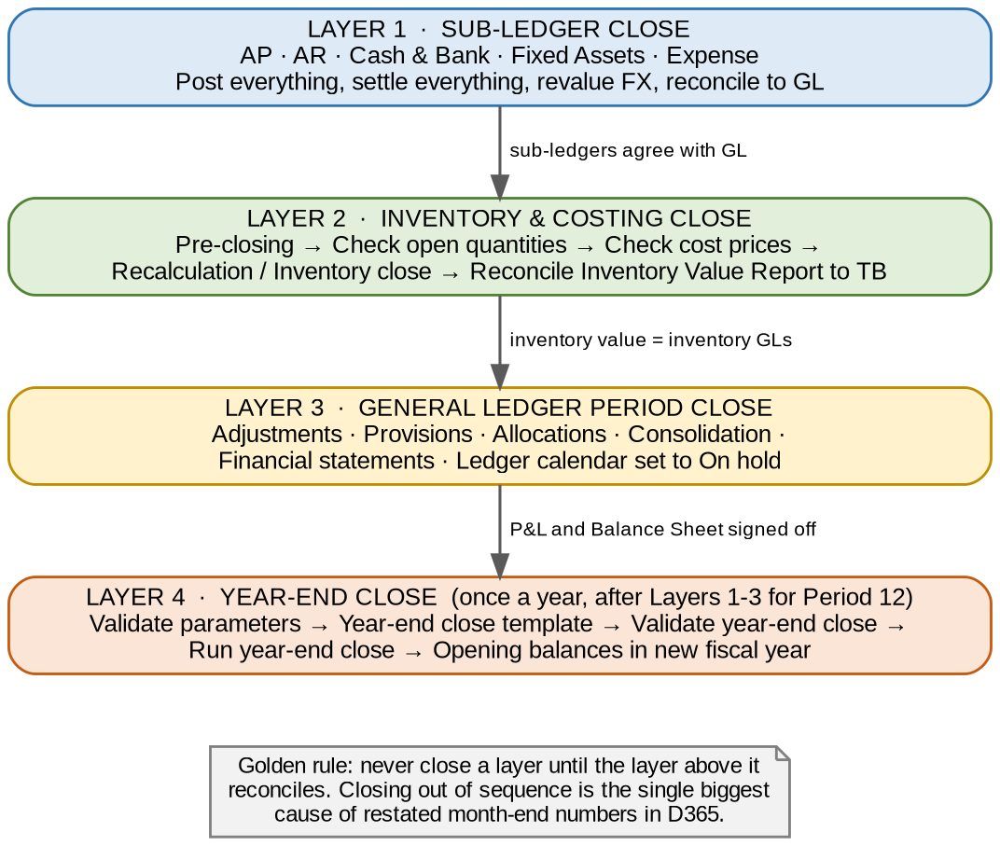
Figure 1 — The four layers of a D365 period close and the gate between each one
1.4 What management should expect and ask for
A close that is under control produces the same short set of evidence every month. These are the questions worth asking, and where in this handbook the answer is produced:
Question to ask each month | The evidence that answers it | Section |
|---|---|---|
Did every sub-ledger agree with its control account in the trial balance? | Vendor to ledger and Customer to ledger reconciliation reports, run with Include details and Differences only | 5.1, 5.2, 12 |
Is the inventory on the balance sheet the inventory we actually hold, at the cost we actually paid? | Inventory value report reconciled to the inventory main accounts, after inventory close has run for the period | 6.8, 12 |
Are there receipts we have taken into stock but never been invoiced for? | GRN not invoiced report, agreed to the purchase accrual account | 5.1, 12 |
Are there production orders carrying cost that has not reached the trial balance? | Pending production order report; production control accounts should net to zero | 5.6, 12 |
How much is sitting in goods in transit, and whose is it? | Stock transfer shipped but not received report against goods in transit and interim transit accounts | 11.3, 12 |
Is the period actually locked, and can someone still post into it? | Ledger calendar showing period status On hold and module access levels | 7 |
How long did the close take, and where did it stall? | All financial period close tasks list page, exported to Excel — scheduled due date versus actual completion date, by person | 3.6 |
The one metric worth tracking Days to close, measured from the period end date to management sign-off, trended over twelve months. Every other improvement — fewer reconciling items, fewer audit observations, faster reporting — shows up in that single number. The All-financial period close tasks list page gives you the underlying data for free once the workspace is configured, because it records the scheduled due date, the actual completion date and the person who completed each task. |
1.5 Who owns what
The close fails at handover points, so ownership needs to be explicit. The allocation below is the common pattern; adapt the names to your structure but do not leave a row unowned.
Close area | Performs | Reviews | Typical blockers this owner must clear |
|---|---|---|---|
Accounts payable | AP executive | Finance manager | Product receipts not invoiced; unposted vendor invoice journals; unsettled payments; debit notes for short quantity |
Accounts receivable | AR executive | Finance manager | Delivered sales orders not invoiced; free text invoices in draft; unapplied receipts |
Cash and bank | Treasury / accounts | Finance manager | Bank statement not imported; charges, interest and bank GST not booked |
Fixed assets | Fixed asset accountant | Finance manager | Acquisition and disposal journals unposted; depreciation not run |
Inventory and costing | Costing analyst | Financial controller | Open quantities; cost price deviations; inventory close not run; item group changes mid-year |
Production | Production planner | Costing analyst | Picking lists and routes unposted; orders reported as finished but not ended; shop-floor rejections not punched |
General ledger | GL accountant | Financial controller | Accruals and provisions; allocations; inter-company; consolidation |
Tax and statutory | Taxation team | Financial controller | GST settlement; GSTR-1 / 2B / 3B against the trial balance; TDS, TCS, PF and ESI |
Period locking and sign-off | Financial controller | CFO | Ledger calendar status and module access levels |
A close only compresses if the sequence is agreed in advance and the dependencies are respected. The timetable below is indicative — a business closing on day five will pull it tighter, a multi-plant manufacturer may need longer for costing — but the order is not negotiable, because each band depends on the one above it.
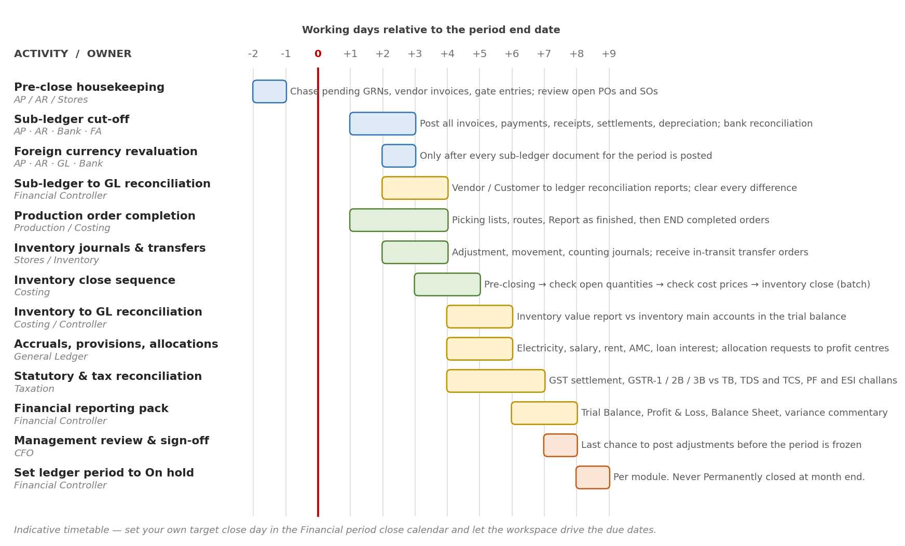
Figure 2 — Indicative period close calendar, from two days before period end to the period being locked
Two features of this calendar are worth drawing out, because they are the ones that most often get compressed and then cause rework.
- Pre-close housekeeping starts before the period ends, not after. Chasing pending GRNs, gate entries without a material receipt, open purchase orders and undelivered sales orders on the last two days of the month removes most of the blockers that would otherwise surface on day three.
- Foreign currency revaluation runs after everything in the sub-ledger is posted, and before reconciliation. Running it, early means running it again.
The Financial period close workspace helps you track closing processes across companies, areas and people. Depending on the view assigned to a user, they see either all tasks and statuses for a closing schedule, or only the tasks assigned to them. It is the governance layer that sits over everything else in this handbook.
3.1 How the configuration fits together
Configuration is built from the bottom up. Resources, task areas, closing roles, tasks and legal entities feed into a calendar and a template; the calendar and template are then tied to a specific period by a closing schedule, which is what appears in the workspace.
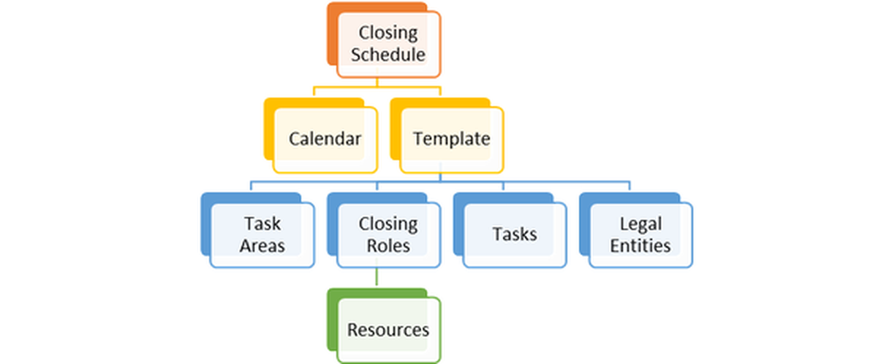
Figure 3 — Structure of the Financial period close configuration
Path General ledger > Period close > Financial period close configuration
3.2 Step 1 — Task areas
Task areas group closing tasks into logical areas of ownership within the organisation. In general terms they are usually your modules: Accounts payable, Accounts receivable, General ledger, Inventory, Fixed assets, Taxation.
Path General ledger > Period close > Financial period close configuration > Task areas > New
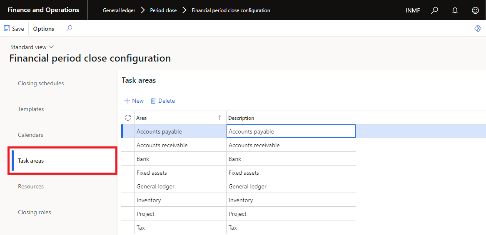
Defining task areas
3.3 Step 2 — Closing roles
Closing roles define the type of responsibility that can be assigned within each area — for example preparer, reviewer, approver.
Path General ledger > Period close > Financial period close configuration > Closing roles > New
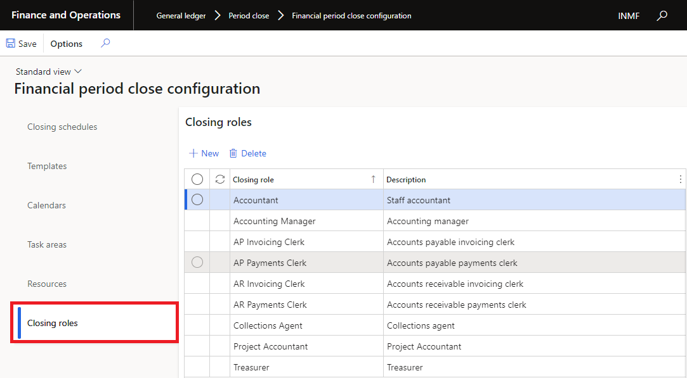
Defining closing roles
3.4 Step 3 — Resources
Resources answer the question "who does what". You map an employee to task areas and legal entities, and you set the view they get in the workspace. Two options exist, and the choice matters:
- Only assigned tasks — the user sees only their own tasks. Users with this view cannot add, edit or remove tasks from the task list.
- All tasks and status — the user sees every closing task and the status of the overall process. This is the financial controller’s view.
Path General ledger > Period close > Financial period close configuration > Resources > New
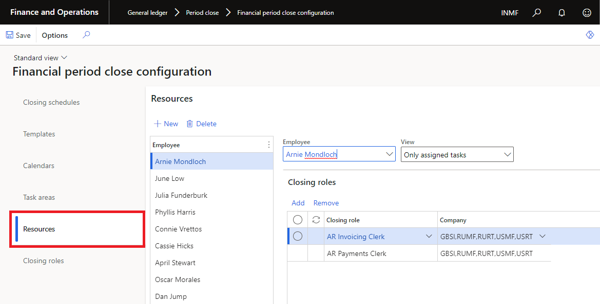
Mapping resources to task areas and legal entities
3.5 Step 4 — Calendar
The calendar defines the working days used for scheduling closing tasks, and therefore the target close date. If the intention is to close the month by the fifth working day of the following month, that is expressed here.
Create the calendar for a long horizon — a year or several years — because it can be edited afterwards. After creation, use Edit to mark specific days such as public holidays. Tasks are only scheduled on days where the Control value is Open; set it to Closed for a day on which no closing task should fall.
Path General ledger > Period close > Financial period close configuration > Calendars > New
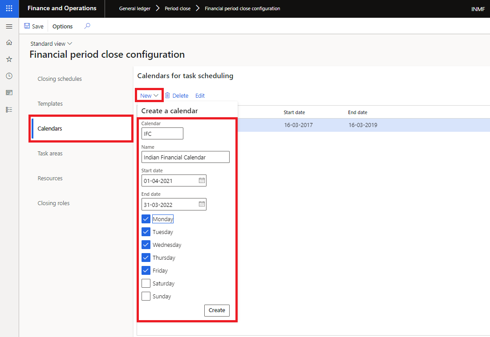
Defining the period closure calendar and its working days
3.6 Step 5 — Template, task links and dependencies
The template defines every task that forms part of a closing process. A closing task is a recurring work effort assigned to an individual to complete each period — sub-ledger reconciliation, tax reporting, inventory closing, currency revaluation, depreciation posting, and so on.
For each task you define a relative due date: the number of days before or after the period end date that the task is due each period. You also assign a due time, set in the context of your own time zone, which converts to each user’s time zone automatically.
Path General ledger > Period close > Financial period close configuration > Templates > New
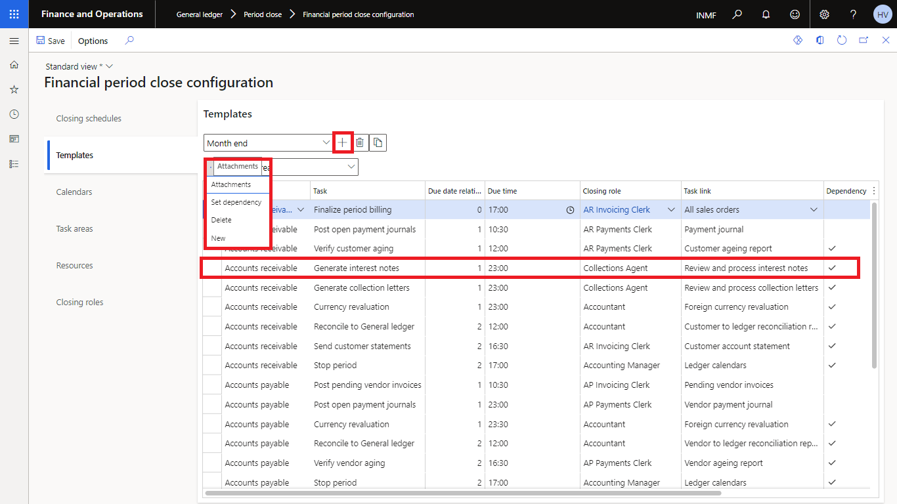
Defining tasks within a template, with relative due dates
Task navigation links
The task name in the workspace is a hyperlink to the page where the work is actually done. Setting this turns the workspace from a checklist into a working surface — the user clicks the task and lands on the right page. A currency revaluation task for Accounts payable, for example, links to the Foreign currency revaluation page. External URLs are also supported.
Path General ledger > Period close > Financial period close configuration > Templates > select task > Task link
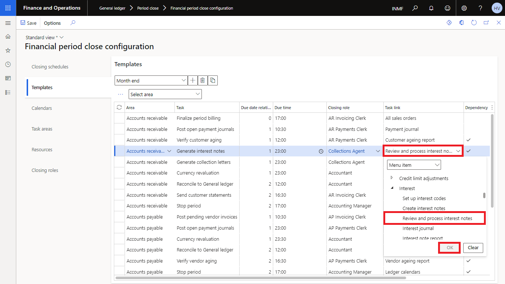
Attaching a navigation link to a task
Linking a financial report to a task To link a specific financial report to a close task, use the report URL. Open the report in the report designer, choose File > View report to open it in a browser, then copy the address bar contents into the task link URL field. |
Dependencies
Tasks can depend on other tasks. Accounts payable cannot be closed, for example, until vendor foreign currency revaluation has run. A task that is blocked by an incomplete dependency shows a padlock icon in the workspace and cannot be marked complete.
Path General ledger > Period close > Financial period close configuration > Templates > select task > Set dependency
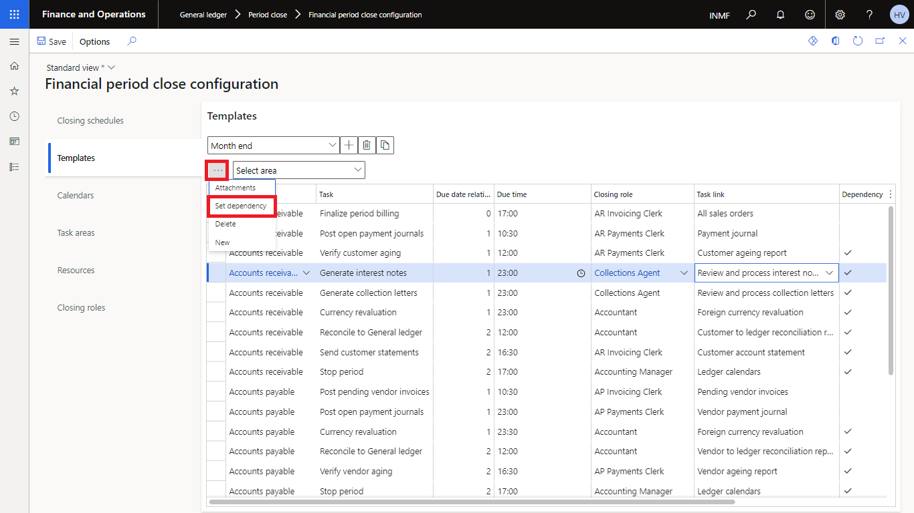
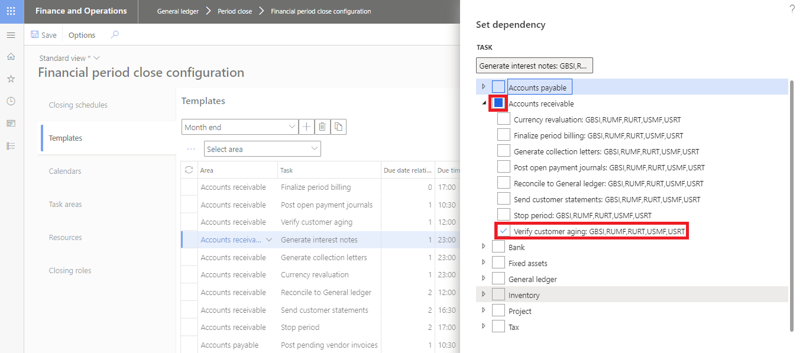
Setting dependencies between closing tasks
Use more than one template Create separate templates for different period types — month end versus year end — or for groups of companies that close differently. Once one template exists, copy it to a new template and adjust. Only one template can be assigned to each closing schedule. |
3.7 Step 6 — Closing schedule
The closing schedule ties everything together: it assigns a template to a specific financial period that must be closed, along with the calendar and the companies in scope. The tasks from the template are then generated automatically for that period, and the schedule appears in the workspace.
The Period end date on the schedule is what converts each task’s relative due date into an actual due date. If no calendar is assigned, due dates simply use all days of the week. Where a template task is assigned to multiple companies, D365 creates a separate task for each company in the schedule.
Path General ledger > Period close > Financial period close configuration > Closing schedules > New
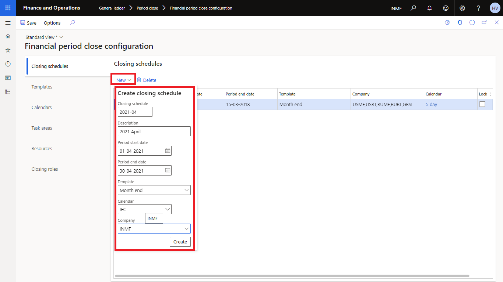
Mapping task areas, calendar, template, resources and closing roles into a schedule
3.8 Using the workspace day to day
Path General ledger > Workspaces > Financial period close
Select a closing schedule at the top of the workspace; everything below then filters to that schedule.
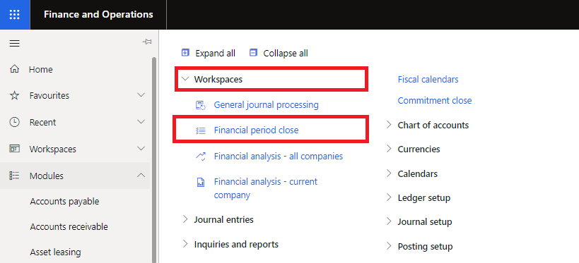
The Financial period close workspace
Summary tiles
The summary tiles give the state of the process at a glance across every company in the selected schedule: tasks past due, tasks remaining today, tasks due today but blocked by dependencies, and all remaining tasks.
Tasks and status
This section breaks the schedule down by company, by area and by person responsible. Each tab shows both percentage complete and the number of tasks remaining. Filters let you show all tasks, only those due today, or only those past due, and you can show or hide completed tasks.
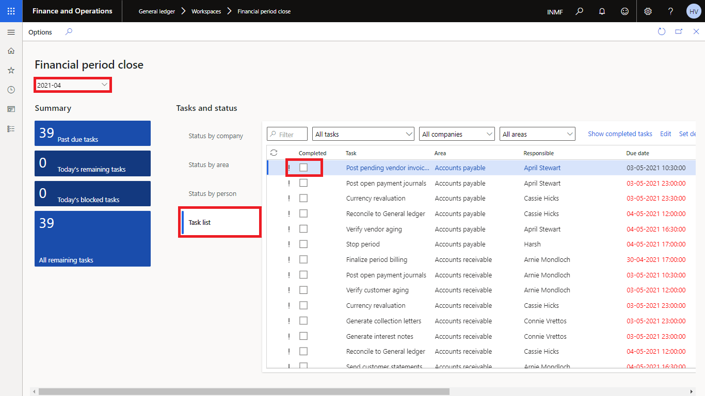
Selecting the template and working the task list
Two icons carry the exceptions:
- An exclamation point means the task is past due. The due date is also highlighted in red.
- A padlock means the task depends on other tasks that are not yet complete. A blocked task cannot be marked as completed.
Use Attachments on a task to hold the evidence — journal numbers used, comments on a variance, or the report file that was printed for that task. An icon appears in the Attachment column when something is attached. When the work is done, select Task complete; the completed date stamps automatically and dependent tasks unlock.
3.9 Historical analysis and audit evidence
Path General ledger > Period close > All financial period close tasks
This list page holds current and previous period close tasks, with the scheduled due date, the actual completion date and the person who completed each task. It exports cleanly to Excel, which makes it the natural source both for measuring days-to-close and for demonstrating to auditors that the close followed a controlled, evidenced process.
Once a schedule is finished, set the Closed option on it. The task history stays available on the list page, but the schedule drops out of the workspace, and no further tasks can be added, edited or removed.
3.10 A starting task list
If you are building a template from scratch, the list below is a reasonable first draft. Relative due dates are expressed in days from period end; adjust to your own target close day.
Task area | Task | Rel. due | Depends on |
|---|---|---|---|
Accounts payable | Post invoices for all posted product receipts | +1 | — |
Accounts payable | Post and settle vendor payments | +2 | — |
Accounts payable | Vendor foreign currency revaluation | +2 | AP invoices and payments posted |
Accounts payable | Vendor to ledger reconciliation | +3 | Vendor FX revaluation |
Accounts receivable | Invoice all delivered sales orders and free text invoices | +1 | — |
Accounts receivable | Post and settle customer receipts | +2 | — |
Accounts receivable | Customer foreign currency revaluation | +2 | AR invoices and receipts posted |
Accounts receivable | Customer to ledger reconciliation | +3 | Customer FX revaluation |
Cash and bank | Bank reconciliation, all accounts | +2 | — |
Fixed assets | Post acquisitions, disposals and adjustments | +2 | — |
Fixed assets | Run depreciation | +3 | FA journals posted |
Production | End all completed production orders | +2 | Picking lists and routes posted |
Inventory | Post inventory journals and receive in-transit transfers | +2 | — |
Inventory | Pre-closing | +3 | Inventory journals posted |
Inventory | Check open quantities and check cost prices | +3 | Pre-closing |
Inventory | Run inventory close | +4 | Check open quantities; production orders ended |
Inventory | Reconcile inventory value report to trial balance | +5 | Inventory close |
General ledger | Post accruals and provisions | +4 | — |
General ledger | Process allocations | +5 | Accruals posted |
Taxation | GST settlement and GSTR reconciliation | +5 | AP and AR reconciled |
General ledger | Generate financial reporting pack | +6 | All reconciliations complete |
General ledger | Set ledger calendar periods to On hold | +8 | Management sign-off |
The chart below is the whole month-end close on one page. Everything in Section 5 is an expansion of one of these boxes. Read it left to right: sub-ledgers are cut off and proved against their control accounts, inventory and costing are closed and proved against the inventory accounts, and only then does the general ledger work — accruals, allocations, tax and reporting — begin.
Note the three decision diamonds. Each one is a gate. If a gate fails, you go back and fix the cause; you do not carry the difference forward with a note to investigate later, because next month the same difference will be there plus a new one.
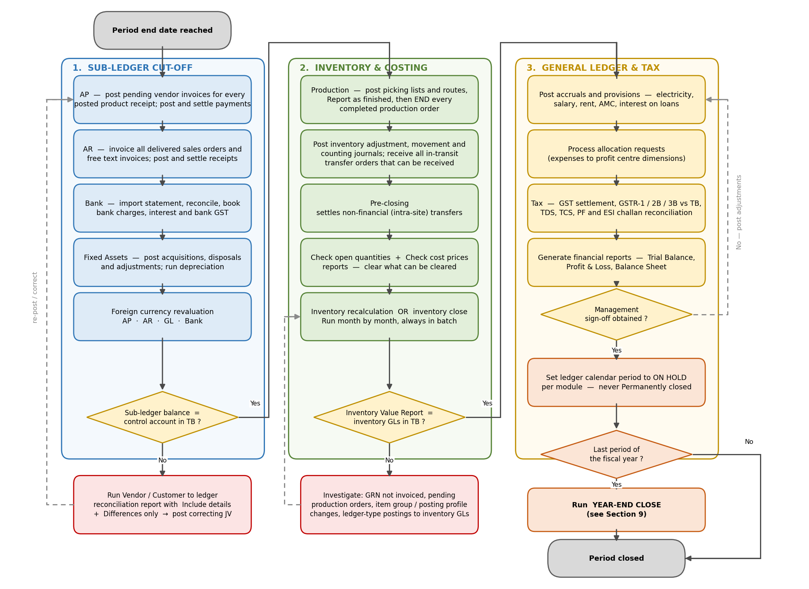
Figure 4 — Month-end close, end to en
Every department has work to do before the month can be closed. The activities below are grouped by D365 module rather than by department, because the same process is owned by different departments in different organisations. Adapt the ownership; keep the activities.
5.1 Accounts payable
Post invoices for all received purchase orders
Where material has been received against a purchase order and the MRN / GRN / product receipt has been posted, the invoice must be posted against that purchase order. Until it is, the vendor outstanding is understated and the financial inventory for those receipts has not been posted.
Path Accounts payable > Invoices > Pending vendor invoices
Post all pending invoices received from vendors
Where invoices have been received and entered but not posted, review them all before closing.
Path Accounts payable > Invoices > Vendor invoice journal
Post and settle all payments
Any vendor payment created but not posted must be dealt with before closing. Every open unsettled transaction should be settled so that the vendor statement and ageing are accurate.
Path Accounts payable > Payments > Vendor payment journal
Path Accounts payable > Vendors > All vendors > select vendor > Settle open transactions
Run foreign currency revaluation
Required wherever the company transacts in more than one currency. Run it only after all AP documents for the period are posted.
Path Accounts payable > Periodic tasks > Foreign currency revaluation
Reconcile vendor balances to the control accounts
Reconcile the vendor sub-ledger against the trial balance. Where there is a difference, check whether the trial balance voucher contains transactions with a posting type of Ledger, or any posting type other than vendor balance or vendor settlement — those do not post to the sub-ledger and are a common source of difference.
Path Accounts payable > Periodic tasks > Vendor to ledger reconciliation report
Path Accounts payable > Inquiries and reports > Vendor reports > Vendor balance list
Path General ledger > Inquiries and reports > Trial balance
Running the reconciliation report so it is useful Provide the date range across which the variation is to be checked, select the posting profile if the two sources are being compared for different posting profiles, and tick both Include details and Differences only. Without those two check boxes the report is a balance listing rather than a reconciliation. |
Set the fiscal period on hold for vendors
Always use On hold rather than Closed. A closed period cannot be reopened if an adjustment is later required.
Path General ledger > Calendars > Ledger calendars > select period > Period status
Further AP activities
- All debit notes relating to short quantity should have been booked.
- All MRNs should be made — there should be no pending MRN against a gate entry.
- All purchase orders should be reviewed to verify actual pendency.
- The effect of pending MRNs to be booked should be taken into provision.
- Debit note and credit note reconciliation.
- Purchase reconciliation against creditors.
5.2 Accounts receivable
Post invoices for all open or delivered sales orders
Where a sales order has been created and relates to the period but has not been invoiced, post the customer invoice before closing so that the customer balance, outstanding and financial inventory for delivered orders are updated.
Path Accounts receivable > Customer invoice workspace
Post all pending free text invoices
Path Accounts receivable > Invoices > Free text invoices
Post and settle all received payments
As with AP, settle every open transaction so that the customer statement and ageing are meaningful.
Path Accounts receivable > Payments > Customer payment journal
Path Accounts receivable > Customers > All customers > select customer > Settle open transactions
Run currency revaluation
Path Accounts receivable > Periodic tasks > Foreign currency revaluation
Reconcile customer balances to the control accounts
The same logic as AP applies: differences usually trace to ledger-type postings that never reached the sub-ledger.
Path Accounts receivable > Periodic tasks > Customer to ledger reconciliation report
Path Credit and collections > Inquiries and reports > Customers > Customer balance list
Path General ledger > Inquiries and reports > Trial balance
One thing to remember about cost of goods sold COGS is booked only for sales and sales return transactions. Any financial voucher, debit note or credit note raised against a customer that does not carry a quantity has no COGS impact at all. If margin looks wrong, check whether value-only credit notes are being used where a return order was needed. |
Set the fiscal period on hold for customers, then complete the remaining activities
- Sales reconciliation against debtors.
- Produce customer ageing after payments have been adjusted against pending invoices — not before.
5.3 Cash and bank
A bank reconciliation statement compares the cash balance in the company’s books with the corresponding amount on the bank statement. Reconciling the two identifies whether accounting changes are needed, and is one of the few controls that reliably detects both error and cash manipulation.
Path Cash and bank management > Bank accounts > Reconcile
Where advanced bank reconciliation is configured, import the bank statement first and then run the matching process.
Points to confirm
- The balance per the bank statement reconciles to the bank balance in the system.
- Bank charges have been booked as per the statement.
- GST invoices raised by the bank have been accounted for.
Why the two balances differ
The bank’s closing balance and the company’s closing balance are almost always different. The usual reasons:
Reason | What it is |
|---|---|
Deposits in transit | Cash and cheques received and recorded by the company but not yet recorded on the bank statement. |
Outstanding cheques | Cheques issued to creditors where the payment has not yet been processed by the bank. |
Bank service fees | Charges the bank deducts for services provided, usually small individually. |
Interest income | Interest credited by the bank on certain accounts. |
Not sufficient funds (NSF) cheques | A cheque deposited by a customer where the issuer’s account lacked funds. The bank deducts the previously credited amount and returns the cheque to the depositor. |
Bank charges and GST — a practical workaround The bank is an internal party in D365, so the system does not calculate or post tax on bank transactions directly. The common solution is to create each bank as a vendor, grouped to a single main account, and route charge transactions through that vendor account with GST, paying it off afterwards. The charge voucher becomes: bank charges Dr, GST recoverable Dr, bank vendor Cr; and the payment voucher: bank vendor Dr, bank Cr. |
5.4 Fixed assets
A fixed asset is a long-term tangible item of property or equipment that the business owns and uses in its operations to generate income, and which is not expected to be consumed or converted to cash within a year.
Post all acquisitions and adjustments
Path Fixed assets > Journal entries > Fixed assets journal
Path Fixed assets > Journal entries > Inventory to fixed assets
Assets can also arrive through project elimination or purchase invoices — check those routes too.
Post all sales and scrapping of assets
Path Fixed assets > Journal entries > Fixed assets journal
Path Accounts receivable > Invoices > Free text invoices
Run depreciation for the month
Run depreciation on every depreciable asset carrying a positive net book value.
Path Fixed assets > Journal entries > Fixed assets journal (Proposals > Depreciation proposal)
Reconcile fixed assets to the control accounts
Fixed asset reconciliation shows a summary of book value, together with debits and credits to the fixed asset accounts and accumulated depreciation. It is what ties the balance sheet to the fixed asset register.
Path Fixed assets > Inquiries and reports > Fixed asset balances / Fixed asset statement
Set the fiscal period on hold for fixed assets
Path General ledger > Calendars > Ledger calendars > select period > Period status
5.5 Inventory
The governing principle for inventory at month end is simple: make sure all physical inventory is posted as financial — delivered, received, or reported as finished. Physical-only transactions carry estimated cost, and estimated cost is what produces an inventory value that does not agree with the ledger.
This section lists the month-end actions. The mechanics of the inventory close itself — pre-closing, the two check reports, the close and the reconciliation — are covered in full in Section 6.
Post all required inventory adjustment journals
Path Inventory management > Journal entries > Items
Post inventory counting
Path Inventory management > Journal entries > Item counting > Counting
Close in-transit transfer orders wherever possible
Review all transfer orders with a shipped status and receive everything that can legitimately be received. Anything left sits in goods in transit on the balance sheet.
Path Inventory management > Outbound orders > Transfer orders (filter on Shipped)
Perform inventory adjustments where required
This is for correcting wrongly posted cost on purchase transactions — for instance where 500 per unit was posted instead of 50, an adjustment of 450 is passed against the transaction.
Path Inventory management > Periodic tasks > Closing and adjustment > Adjustment
Run inventory recalculation or inventory closing
Recalculation derives the final valuation and produces the FIFO or LIFO valuation — remember that during the month D365 posts at a running weighted average even where the item model group specifies FIFO or LIFO. Closing additionally settles receipts against issues and locks the period. See Section 6.7 for which to use.
Path Inventory management > Periodic tasks > Closing and adjustment > Recalculation / Close procedure > Close
Reconcile inventory to the trial balance
Match the inventory balance to the trial balance. Where they differ, check for ledger-type transactions posted directly to inventory accounts, and for any item group change made during the month.
Path Cost management > Inquiries and reports > Inventory value reports
Reports to run
- Inventory ageing report against the inventory GLs in the trial balance.
- Inventory value report against the inventory GLs in the trial balance.
5.6 Production
Post picking lists and routes for the current month’s production
Path Production control > Production orders > All production orders
Post adjustments where required
To adjust a posted picking list, report as finished, or route card.
Report as finished
Reporting as finished is what gives you the inventory that has actually been produced and is physically available, at the right cost.
End production orders for the current month
Every production order that has been fully reported as finished must be ended. Ending is what produces the final cost of the finished goods and the financially closed inventory. An order left un-ended carries its cost outside the trial balance.
Path Production control > Production orders > All production orders (Process > End)
Further production activities
- All production orders should be reviewed; the Balance production order report is useful for this.
- Production orders that have been started should be completed in the system at month end.
- Rejection of material at the shop floor should be punched into the system.
- Inventory taking of all material at the shop floor, including inventory in shop-floor warehouses and material in excess warehouses.
Sequence matters when production cascades Where a production cycle involves multiple production orders, ending a later order before the earlier one produces an incorrect cost. Orders must be ended in the sequence of the production cycle. A manufactured product must never be used as an input to the same production order — the cost flow will be wrong. Where a picking list is posted with a negative quantity, specify the cost price manually. A negative picking list is treated as an origin transaction with status Purchased, and zero cost will otherwise flow. |
5.7 General ledger
Post all adjustments
Path General ledger > Journal entries > General journals
Post provisions
Most bills are not received by the end of the month but relate to it, so provisions are the better practice. Typical items:
- Electricity bills.
- Salary payable.
- Contract-based charges — rent, AMC, subscriptions.
- Review of employee imprest balances, with deduction from monthly salary where the imprest is not recurring in nature. Most organisations take employee-wise balances from the staff register: some carry credit balances such as conveyance and hotel bills, others carry debit balances such as imprest advanced, bills not received, and monthly salary deductions.
Post expense allocations to profit centre dimensions
Path General ledger > Allocations > Process allocation request
Generate all financial reports
Run the reporting pack and match balances against the respective ledger accounts — trial balance, balance sheet and statement of profit and loss.
Path General ledger > Inquiries and reports > Financial reports
Additional general ledger tasks recommended by Microsoft
- Complete all tasks for every other module first.
- Verify that all journals are posted.
- Settle transactions for each ledger account.
- Journalise transactions and review the Ledger journal report.
- Perform consolidation, using either a consolidation company or financial reporting.
- Set ledger periods to On hold so that no further posting occurs; restrict a period to a specific user group while period-end activities are under way for tighter control. Do not set periods to Permanently closed — a permanently closed period cannot be reopened.
Validate main account types before a year end
So that D365 derives the correct retained earnings balance, confirm that all revenue, expense and profit-and-loss type accounts are typed correctly — those are the accounts considered for retained earnings.
Path General ledger > Chart of accounts > Accounts > Main accounts
5.8 Tax and statutory (India)
These activities sit on the critical path in Indian entities because the filing deadlines are fixed and external.
Area | Month-end activity |
|---|---|
GST — outward | GSTR-1 contains details of all outward supplies, that is sales and stock transfer shipments. Filed monthly or quarterly by every registered taxpayer. Agree it to the sales register and to the trial balance. |
GST — inward | GSTR-2 shows purchases made for the month. Agree to the purchase register. |
TDS | All TDS entries should be posted before the 7th of the following month. TDS payable per the general ledger should agree to the TDS report. |
TCS | TCS payable per the general ledger should agree to the TCS report. |
ESI | ESI payable challans against the entries in the trial balance. |
PF | Provident fund payable challans against the entries in the trial balance. |
Other | Interest on credit card limits; interest payable on loans reconciled to the repayment schedule. |
Recommended GST configuration There should be no duplicate lines and no blank lines in the tax configuration rate master setup. GST posting setup must be done GSTIN-wise — a separate tax ledger account for each state and for each component (IGST, CGST, SGST). GST reference number sequence groups must be created GSTIN-wise, covering purchase, purchase return, sales, sales return, debit note, credit note, stock transfer shipment and stock transfer receipt. GST must be configured on the legal entity, the site and the warehouse master. Section 10.2 walks through this. |
Inventory period closure calculates the costing for the period and closes inventory transactions up to the defined date. It is the layer that most often delays a close, and the layer where mistakes are most expensive, because a bad inventory close contaminates cost of goods sold, gross margin, the balance sheet and every subsequent month until it is unwound.
The inventory close process settles issue transactions against receipt transactions, based on the inventory valuation method selected in the item’s item model group. As part of that settlement you can specify that the general ledger be updated to reflect the adjustments made. Until inventory close or recalculation has been run, issue transactions are posted at the calculated running average cost price — whatever the item model group says.
What inventory close locks After inventory close, you can no longer post in periods before the inventory closing date you set, unless you reverse the completed inventory close. If inventory close is run for the period ending 31 January, you cannot post transactions dated earlier than 31 January. Inventory close is a required step in the month-end closing procedure for all inventory models except moving average. D365 will warn you if you try to close a financial period without first performing the inventory close as of the period end date. |
How often inventory close runs varies by company, but transaction volume should drive the decision. In general, most companies run inventory close as part of their month-end close and reconciliation procedures. Microsoft recommends running it during off-peak hours so that computing resources are spread more evenly.
6.1 The sequence
Four steps, always in this order.
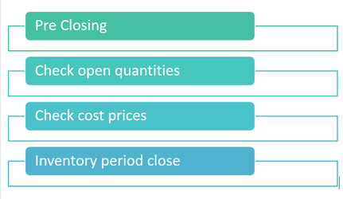
Figure 5 — The inventory close checklist
6.2 Inventory close parameters
Path Inventory management > Setup > Inventory and warehouse management parameters > Inventory accounting tab > Closing
Field | What to set and why |
|---|---|
Extra batch helper | The number of additional threads available during the inventory close. Setting 8 means eight processors can pick up inventory transactions and process them in parallel. |
Helper batch group | The batch group that will process the inventory close. |
Number of items per bundle | How many items are processed in a single set. At 40, with 8 helpers, the system processes eight item sets of forty items simultaneously — 320 items per execution — then picks up the next forty per thread as each completes. |
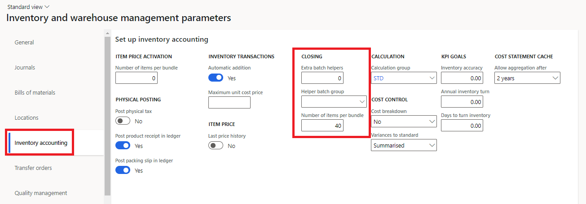
Inventory close parameters under Inventory accounting > Closing
Tuning throughput to your data shape If the item master is large but transactions per item are few, raise the number of items per bundle. If the item master is small but transaction volumes are high, lower it. The standard value is 40. |
6.3 Step 1 — Pre-closing
Pre-closing settles the non-financial inventory transfers. Where costing is not maintained at location level but the same item sits in several locations within one warehouse, transfers between those locations create inventory transactions that have no financial impact. Pre-closing settles them automatically.
Where costing is maintained at site level, inter-site transfers are financial transfers and intra-site transfers are non-financial — it is the latter that pre-closing clears.
Path Inventory management > Periodic tasks > Closing and adjustment > Pre-closing
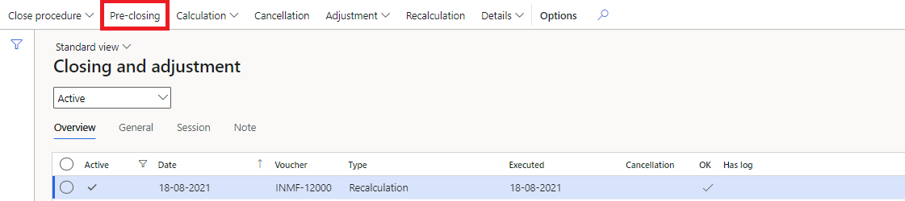
Launching pre-closing from the Closing and adjustment page
Enter the date up to which pre-closing should run — normally the month end date — and select OK.
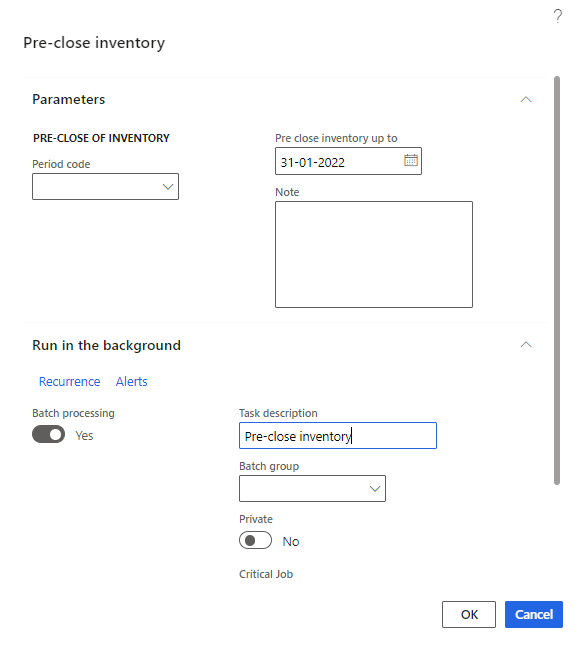
The pre-closing dialog
The system generates a voucher of type pre-closing. No accounting entry is posted, because this is the settlement of non-financial transfers only.
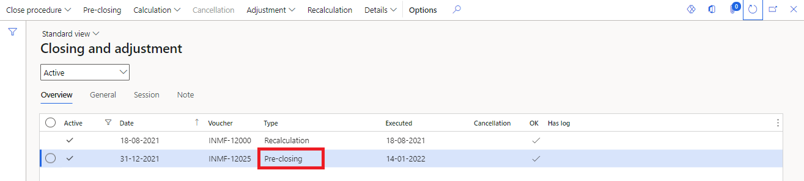
The pre-closing voucher on the Closing and adjustment page
6.4 Step 2 — Check open quantities
This report lists the inventory transactions that will remain open after the inventory close is performed. You select an expected closing date to tell the system when you intend to close.
Take an item with an inventory physical receipt for a quantity of 10 and an inventory financial issue for a quantity of 3. The open quantity report will include an open quantity of 3, because that financial issue cannot be settled against anything. Selecting Show receipts additionally shows all physical receipts posted for the item and the open quantities that will remain after the close date — in other words, it brings in what has been received but not yet invoiced.
Path Inventory management > Periodic tasks > Closing and adjustment > Close procedure > Check open quantities
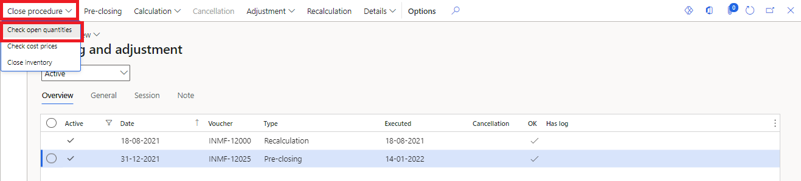
Select the expected closing date, tick Show receipts, and select OK.
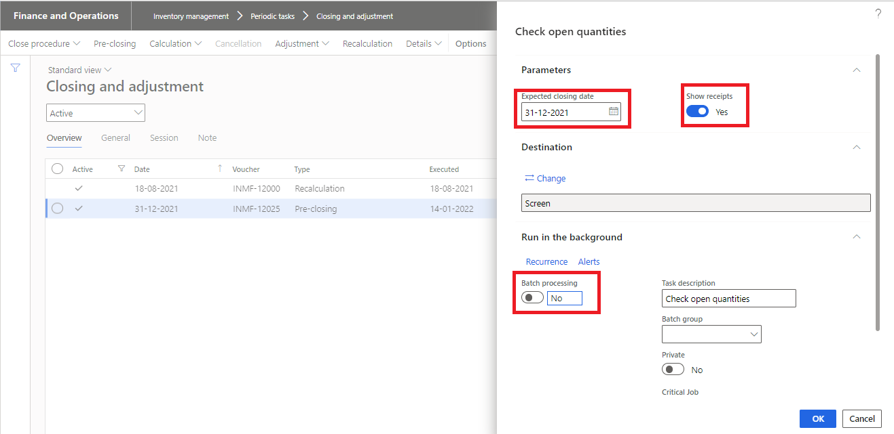
Check open quantities parameters
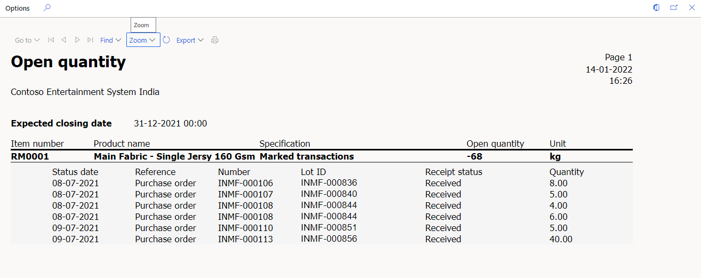
Check open quantities — report format
What to do with this report This is your work list, not just a warning. Every line on it is a purchase order, sales order or production order that is not financially closed. Clear what can be cleared — post the vendor invoice, end the production order, invoice the sales order — before running the close, not after. |
6.5 Step 3 — Check cost prices – Not mandatory
This report flags cost prices that deviate from expectation by more than a threshold you set. You enter a maximum deviation as a percentage and a minimum deviation as an amount, and you choose the basis for comparison: the item cost price, the median cost price, or item-or-median.
For example, with a maximum deviation of 50 per cent and a minimum deviation of 1.00: an item carrying a cost price of 5 is invoiced on a purchase order at 15. Fifteen is more than 50 per cent above five and more than 1.00 in absolute terms, so that line appears on the report.
Path Inventory management > Periodic tasks > Closing and adjustment > Close procedure > Check cost prices
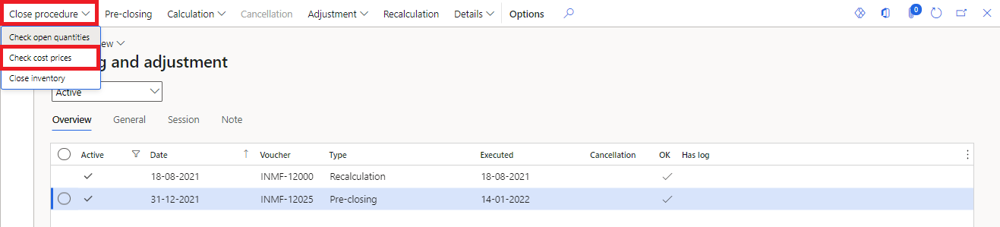
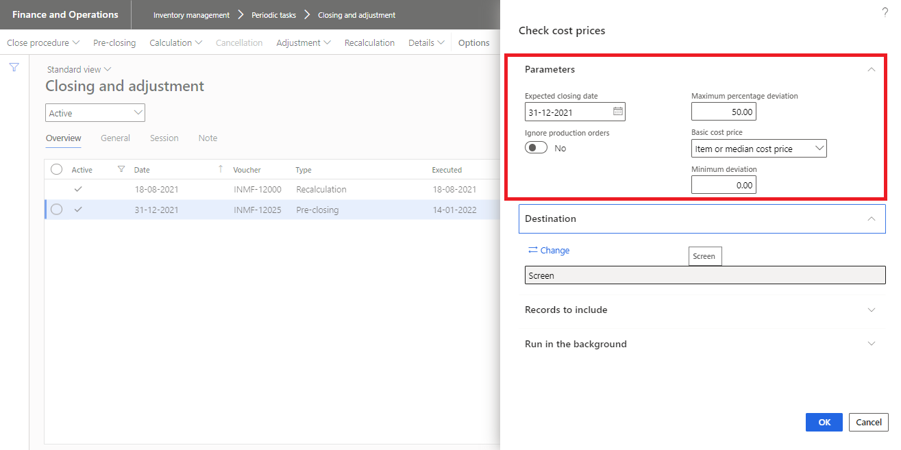
Check cost prices parameters — expected closing date, maximum percentage deviation, minimum amount deviation and calculation basis
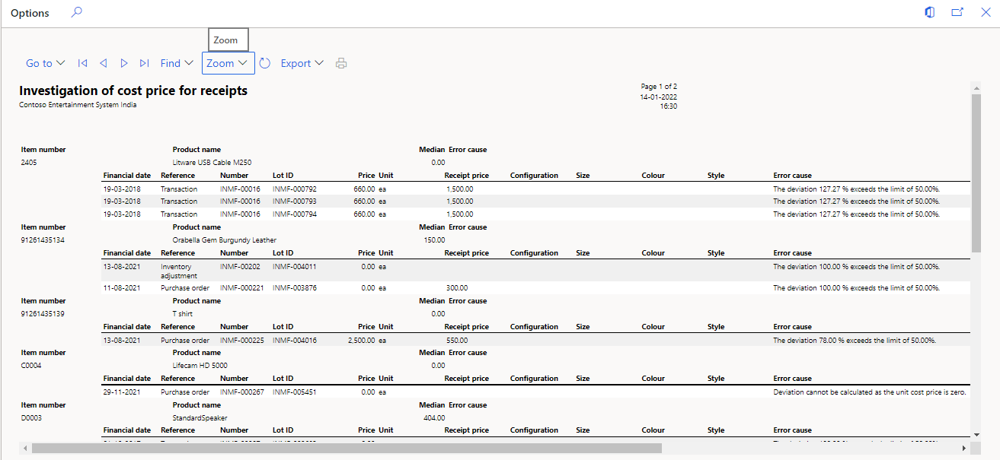
Check cost prices — report format
6.6 Step 4 — Run the inventory close
Once the checklist is worked, close the inventory period to finalise cost and stop users transacting into the closed period.
Path Inventory management > Periodic tasks > Closing and adjustment > Close procedure > Close
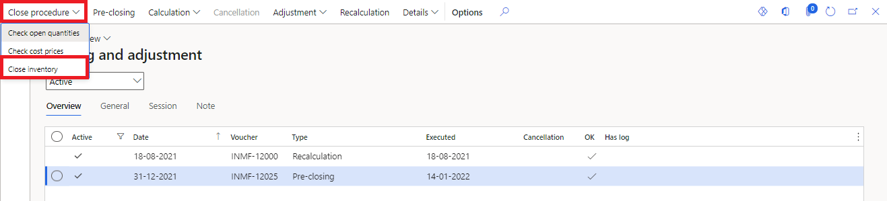
General tab
Field | Guidance |
|---|---|
Closing date | The month end date. |
Specification | Total for a single voucher covering all items; Item group for a voucher per item group; Item number for a voucher per item. Choose by how you need to trace adjustments — Item group is usually the practical middle ground. |
Maximum throughputs | Items processed per thread. Standard value 40 — raise it for a large item master with few transactions each, lower it for a small item master with heavy transaction volume. |
Minimum throughput adjustment | The smallest adjustment the system will bother to post. Entering 0.10 means adjustments below ten paise are ignored. |
Run recalculation after closing | If selected, recalculation runs after the close up to the current date. Where the month end is completed within a few working days it is not necessary, though it does no harm. |
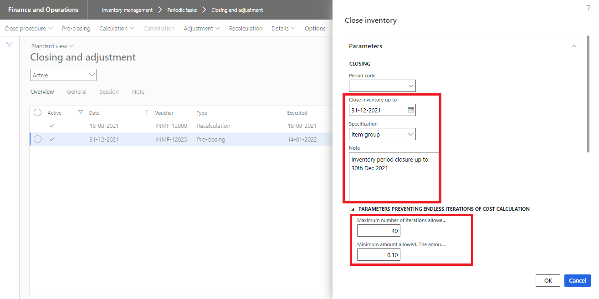
Inventory close — General tab
Batch tab
Always run the inventory close in batch. Batch processing uses multi-threading and cuts the elapsed time substantially. Select Batch processing, enter a task description, choose the batch group, and select OK.
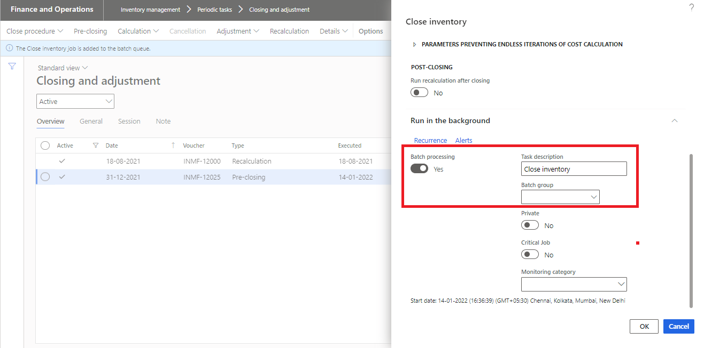
Inventory close — Batch tab
An infolog is generated by the system.
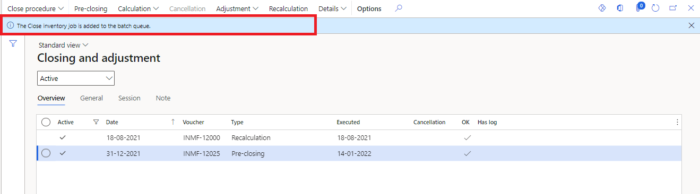
To monitor progress, check the batch job — you can see status, completion percentage, start date and end date.
Path System administration > Inquiries > Batch jobs > Batch jobs
Returning to Closing and adjustment, the system will have created an additional voucher of type closing, with a posting date and an execution date. Select Details > Voucher to see the cost adjustment posted.
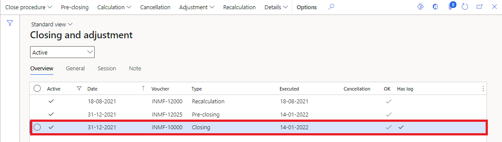
The closing voucher on the Closing and adjustment page
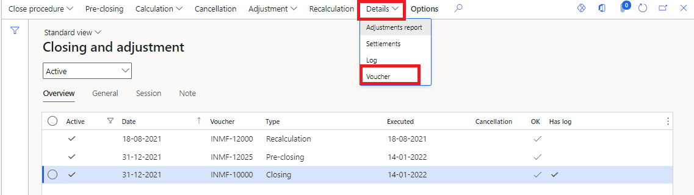
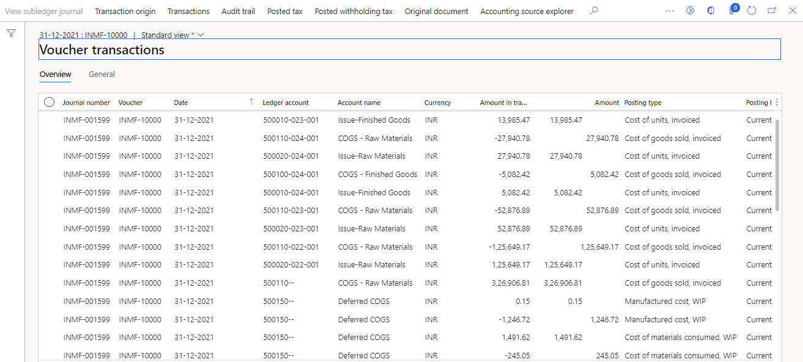
The cost adjustment voucher posted by the inventory close
6.7 Recalculation or close — which one
The two are not interchangeable, and the difference is about whether the period stays open.
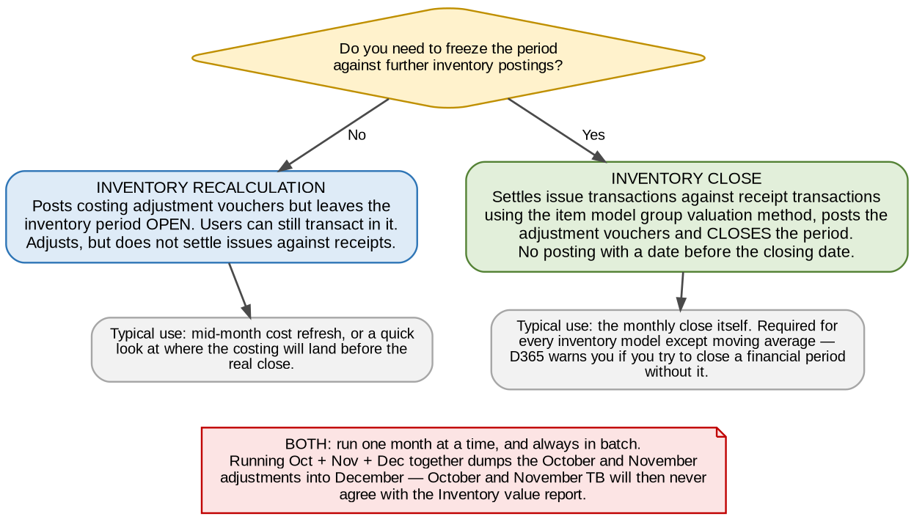
Figure 6 — Choosing between inventory recalculation and inventory close
Inventory recalculation adjusts on-hand inventory and inventory transactions but does not make settlements. Both processes affect whichever ledger account was linked to the original inventory transaction — which has an important consequence:
Adjustments follow the original accounts, not the current ones When a purchase order is created from a sales order, the general ledger accounts used for the original sales order are the ones updated. Even if the ledger accounts for the item group assigned to the item were changed after the sales order was posted, and a recalculation created an adjustment amount, that adjustment posts to the original ledger accounts — not to the new accounts now assigned to the item. This is the mechanical reason why changing item groups or inventory posting profiles mid-year creates reconciliation differences that never resolve themselves. See Section 11. |
To review the ledger voucher posted by either task: on the Closing and adjustment page, on the Overview tab, select the update to review, then select Details > Voucher.
Run month by month — both recalculation and close If recalculation or closing is run for October, November and December together, the adjustments for October and November are posted in December. The October and November trial balances will then never match the inventory value report, and the entire impact lands in December. Always run one period at a time, in date order, and always in batch. |
6.8 The inventory value reconciliation process
This is the routine that proves inventory to the ledger. Run it every month.
- Run the Check open quantities report with the expected close date and Show receipts ticked. It lists every purchase order, sales order and production order that is not financially closed.
- Close all the inventory transactions that can be closed, so that the financial transaction is updated.
- Run inventory recalculation or inventory close, one month at a time, in batch.
- Run the Inventory value report and reconcile it to the general ledger.
- For the accrual account, use the Accrued purchases excluding sales tax report.
Path Accounts payable > Inquiries and reports > Purchase > Accrued purchases excluding sales tax
Run long reports to the print archive, not to screen Run the inventory value report in batch and save it to Print archive rather than Screen. You can then get on with other work; when it finishes, the report is available to you and to other users, and can be downloaded as many times as needed. Path: System administration > Inquiries and reports > Print archive. |
Where the differences usually come from
- Some ledger-type transactions have been posted directly to inventory main accounts.
- An item group was changed part-way through the month, so the main account mapping changed underneath the balance.
- Product receipts have been posted but the vendor invoice has not, so cost has not flowed — check the GRN not invoiced report.
- Production orders reported as finished but not ended — check the Pending production order report.
- Expenses loaded onto inventory after the material was booked, where inventory close has not yet run.
6.9 The inventory close log and its warnings
After the close completes, a message may report that a unit cost price might be incorrect because a transaction could not be fully settled. Before that message appears, the system reports the item number and the affected transaction, and explains that the cost amount used was not updated by the close. The message appears when an issue-type transaction cannot be settled.
During the close, the system checks each financial dimension to see whether there are more issues than receipts up to the specified closing date. That imbalance typically arises when an inventory transaction from a purchase order is not fully posted financially — either the vendor invoice has not been received, or bill of materials components included in a higher-level production are not financially posted because the sub-production has not been cost-calculated. In that case the close cannot adjust all issues to the correct cost price, because there is not enough receipt information available.
Where the log produces many warnings, the recommended actions are:
- Update receipts financially — post the outstanding vendor invoices.
- Advance the closing date.
- Re-evaluate the business procedures that are producing the gap.
In some circumstances nothing can be done. If marking is used and the marked purchase order has a financial date after the closing date, the closing date cannot be changed.
6.10 Reversing a completed inventory close
Occasionally a completed inventory close has to be reversed to return settlements to the state they were in before adjustments were made. Reversing reopens inventory for posting in the period the close covered, and related changes may also be made in the general ledger. Once the adjustments are finished, run inventory close again for that period.
Treat reversal as an exception, not a routine A reversal is a legitimate tool when a genuine error is found before reporting. It is not a substitute for getting the pre-close checks right, and every reversal should carry a documented reason — auditors will ask why a closed period was reopened. |
Ledger period closure puts a period on hold or closes it, preventing further financial accounting entries. If April’s financials are finalised, April should be put on hold or closed so that users cannot post into it and change a trial balance that has already been reported.
It is not technically a mandatory activity, which is precisely why it gets skipped — and why reported numbers then move after the fact. Treat it as mandatory.
On hold, not Closed Once a period status is set to Closed, the period cannot be reopened. It is advisable to set the status to On hold at month end and reserve Closed for the point at which the audit is complete. |
7.1 The ledger calendar
Path General ledger > Calendars > Ledger calendars (also General ledger > Period close > Ledger calendars)
This page is where you change the status of a period, module or sub-ledger, and define which users or user groups may post to a specific period or module.
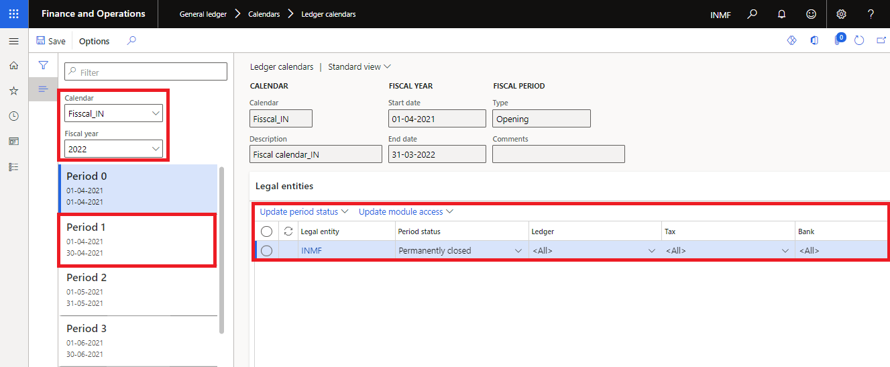
The Ledger calendar page
Fields on the page
Field | Description |
|---|---|
Calendar | The name of the fiscal calendar selected for the ledger. |
Description | The description of the fiscal calendar. |
Fiscal year | The name of the fiscal year selected in the left pane. |
Start date / End date | The dates on which the fiscal year starts and ends. |
Status (year) | Open — at least one period in the year is open and financial transactions can be recorded. Closed — all periods in the year have a Closed status and transactions can no longer be recorded. |
Period name | The name of the period. |
Type | Opening — used to record opening balances from the previous period. Operating — used to record accounting transactions. Closing — used to record general ledger transactions for closing a fiscal year. |
Period start / End date | The dates on which the period starts and ends. |
Comments | An optional comment for the period, entered in the Fiscal calendars form. |
Period status | Open — transactions can be recorded. On hold — transactions cannot be recorded; selectable only from Open; can be reopened. Closed — transactions cannot be recorded; only selectable if the previous period is also Closed; cannot be reopened or put on hold. |
Name (module) | Select a module to specify which users can post transactions for it. |
Access level | All — all users can post to the period. None — no users can post to the period. User group — only a specified group of users can post. |
User group | Where Access level is User group, the group permitted to post. |
7.2 Period status lifecycle
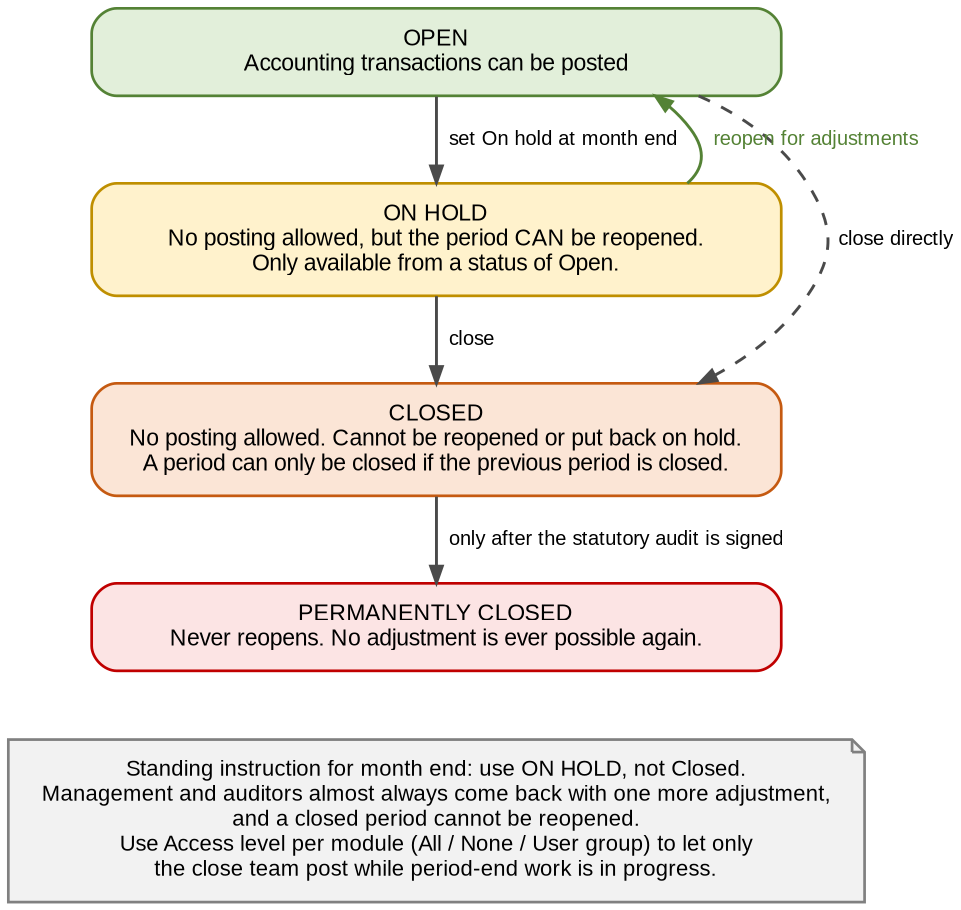
Figure 7 — Period status transitions, and which ones are one-way
7.3 What each module parameter actually controls
The module list on the ledger calendar is not self-explanatory, and setting the wrong one produces either a false sense of security or an unexpected posting block. This is what each parameter governs:
Parameter | Controls |
|---|---|
Ledger | Posting of all journals in General ledger, Accounts receivable, Accounts payable and Project modules, and the posting of the periodic exchange adjustment jobs in General ledger, Accounts receivable and Accounts payable to the ledger. |
Customer | Ledger updates from free text invoices, and exchange adjustment ledger postings caused by manual settlements through Open transaction editing. |
Vendor (supplier) | Exchange adjustment ledger postings caused by manual settlements through Open transaction editing. |
Sales order | Ledger postings caused by sales order updates. |
Purchasing | Ledger postings caused by purchase order updates. |
Inventory | Inventory posting to the general ledger via the Movement, Profit/Loss, Counting and Inventory to fixed assets journals, and from the periodic job Closing and adjustments. |
Production | All ledger updates from production journals. |
Project | Ledger updates posted by project invoice and on-account invoice. |
Sales tax | Posting of the periodic job Sales tax payment to the general ledger, when Update is selected. |
Fixed assets | Currently without any function. |
Bank | Posting to the general ledger during bank account reconciliation, when bank transactions are created. |
Expense | Ledger updates posted by expense reports. |
7.4 Mass financial period close — closing many legal entities at once
Where you run several legal entities on the same fiscal calendar, you do not need to open each one. The ledger calendars page updates period status and module access across companies in one pass.
Path General ledger > Period close > Ledger calendars
- Select Edit.
- Select the period whose status you want to modify.
- Select the legal entities to update. To select all quickly, use the check mark at the upper left of the grid.
- Select Update module access to define posting access to a module. You can also edit records one by one in the grid, but the button is far quicker across multiple entities.
- In Application module, choose the module to update, then Select.
- In Access level, choose All, None, or a specific user group, then Select.
- Select Update.
- Select another period, choose the legal entities, then Update period status and set On hold, Open or Permanently closed.
- Select Update.
Two points on this page The list of legal entities depends on the fiscal calendar selected on the page — you only see entities using that calendar. Do not set a period to Permanently closed until all adjustments and audits are complete. |
Budget control and purchase orders at year end If budget control is in use, complete the purchase order year-end process before closing the last period of the year or putting it on hold. All non-closed budget-controlled documents must be closed or moved to the new year before the year-end can be completed. From Finance 10.0.45 onwards D365 warns you when closing or holding the last period of the year if budget control is in use and open budget-controlled purchase orders exist in that period. |
At the year end, every organisation has to post adjustment entries to comply with accounting practice and statutory audit requirements. There are two ways to do it. You can put them through a general journal — but then nothing distinguishes an operating entry from a year-end close adjustment. Or you can use the closing period adjustment form, which keeps the two populations separate. For anything that will be looked at by an auditor, use the second.
8.1 Creating the closing sheet
Path General ledger > Period close > Closing period adjustments
- Select New to create a line for a closing sheet in a particular posting layer for the fiscal year being closed. The posting layers available are Current, Operations and Tax.
- Enter or select an identifier and a name for the closing sheet. Several closing sheets can be created for each year, but each must have a unique identifier in the Closing sheet field.
- Select a value in the Type field. To make closing adjustments for the whole year and keep them separate from the daily postings in the last period, select Closing.
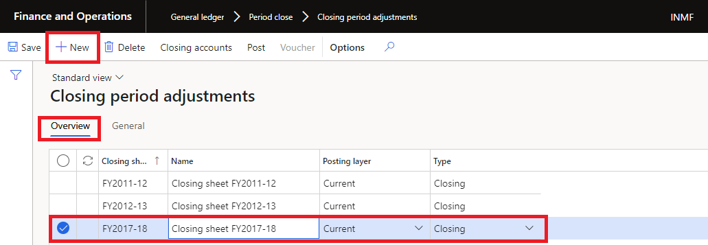
Creating a closing sheet
If you choose Closing as the type You must use the Closing fiscal period field on the General tab to specify which closing period to post to. |
- On the General tab, specify the period the adjustments apply to — enter the financial year start and end dates in the From and To fields.
- In the Post field, specify the posting date for the adjustments.
- Select Closing accounts.
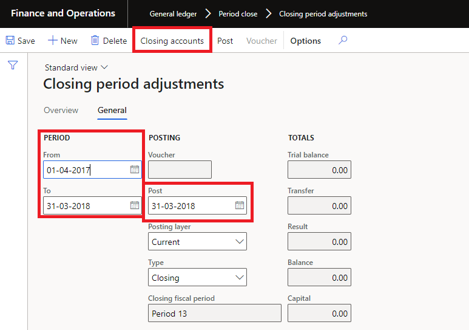
The General tab, and the Closing accounts button
8.2 Loading balances and posting adjustments
- The closing sheet form opens. Select Load balances.
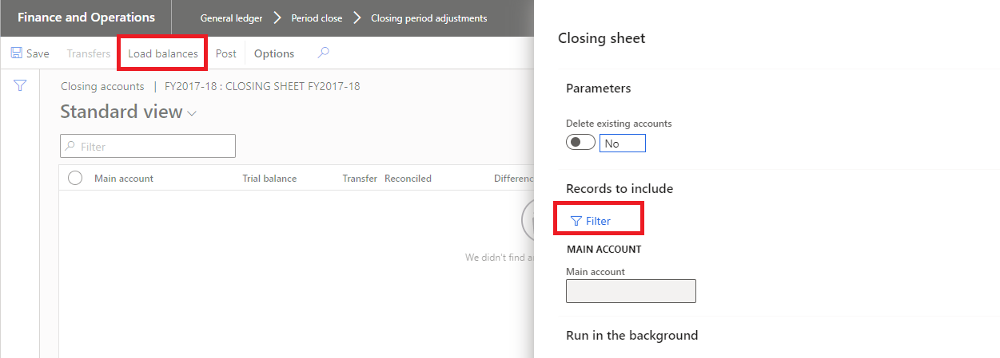
Loading balances into the closing sheet
- Select Filter to choose the accounts to bring onto the closing sheet.
- Select the Delete existing accounts check box to clear what is already there, then OK. The balances of the selected accounts appear in the Closing accounts form.
- Select an account and choose Transfers to adjust the balance of one account and transfer it to another.
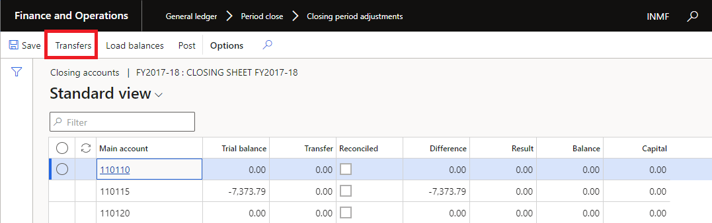
The Transfers button on the Closing accounts form
- In the adjustment transfer form, select the main account, enter a description, select the offset account and the amount. Save and close the form.
- Select Post to post the balances and adjustments on the closing sheet.
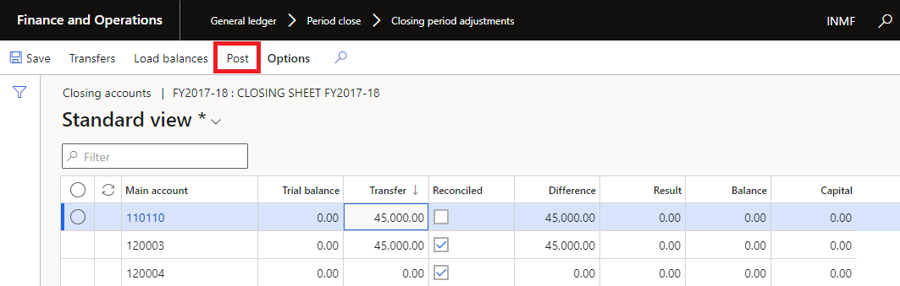
Posting the closing sheet
Why this is worth the extra effort Audit adjustments posted through a closing sheet in a dedicated closing period can be reported on separately, reversed as a set if the auditor changes position, and explained without trawling through the December general journal. Adjustments buried in ordinary journals cannot. |
At the end of a fiscal year you must run the year-end close process to transfer opening balances into the new year. Most organisations run it more than once: the first run moves the balances into the new fiscal year, and the process is then re-run as many times as required to move the balances from adjusting entries into the new year. Re-running is normal and expected, not a sign that something went wrong.
9.1 What the process actually creates
Two types of transaction are possible.
Transaction | When it is created | What it does |
|---|---|---|
Opening transaction | Always | Creates the opening balances in the new fiscal year. It shows the balance sheet ledger account balances in the new year, and the profit and loss balances rolled into the retained earnings ledger account in the new year. |
Closing transaction | Optionally, if Create closing transactions during transfer = Yes | Brings the balances of the profit and loss accounts down to zero in the fiscal year being closed. |
Prerequisites
- A fiscal year must exist for the year the balances are being transferred to.
- A retained earnings ledger account must exist in the balance sheet for the retained earnings amount to be transferred to.
9.2 Preparing for the year-end close
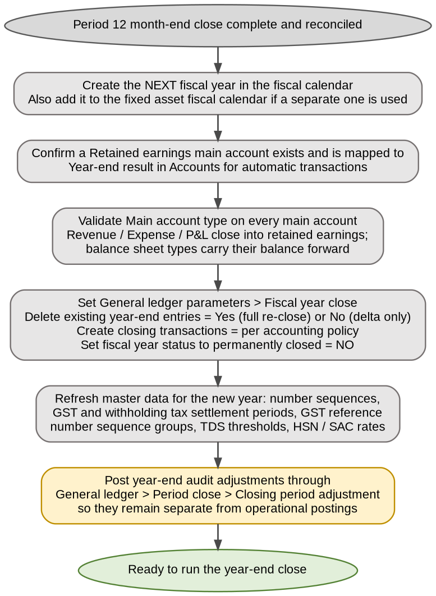
Figure 8 — Year-end close: preparation
9.3 Validate the fiscal year close parameters
Path General ledger > Ledger setup > General ledger parameters > Fiscal year close
Parameter | What it does | Recommended |
|---|---|---|
Delete close-of-year transactions during transfer (also shown as: Delete existing year-end entries when re-closing the year) | Matters when the year has already been closed and the close is being run again. Set to Yes, the voucher for the previous year-end close is deleted and a new voucher is created for all account beginning balances. Set to No, the previous voucher remains and a new voucher is created only for adjusting entries posted since the last year-end close. | Yes where you want a single clean opening entry; No where you want to see the delta from each round of adjustments. Decide once and be consistent. |
Create closing transactions during transfer | Set to Yes, two transactions are created — one voucher in the year being closed bringing P&L balances to zero, and a second voucher in the next year for the beginning balances. Set to No, only the opening voucher is created. | Per accounting policy. |
Set fiscal year status to permanently closed | Sets the fiscal year status to Permanently closed on completion. A permanently closed year cannot be reopened, so no adjustment can ever be posted to it. | NO. Without exception at the point of running the close. |
Voucher number must be filled in during the year end close | Requires the voucher number to be entered manually rather than generated from a number sequence. | Yes — it makes the opening entries easy to identify in the trial balance. In current versions this option has been removed and a manually entered voucher is always required. |
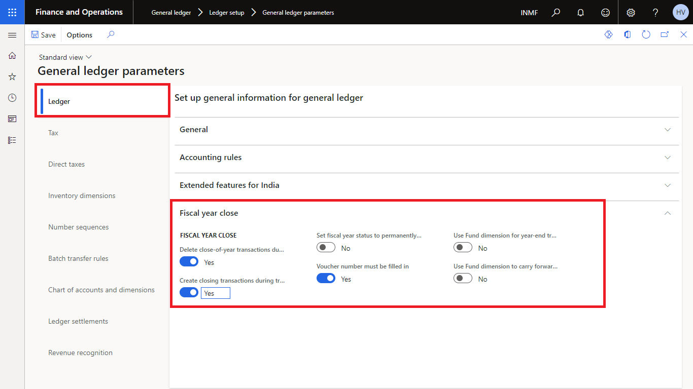
General ledger parameters — Fiscal year close section
9.4 Year-end close posting setup
Confirm that a main account is listed for the Year-end result automatic transaction. This should be your retained earnings account. Without it the close has nowhere to put the profit and loss balances.
Path General ledger > Posting setup > Accounts for automatic transactions
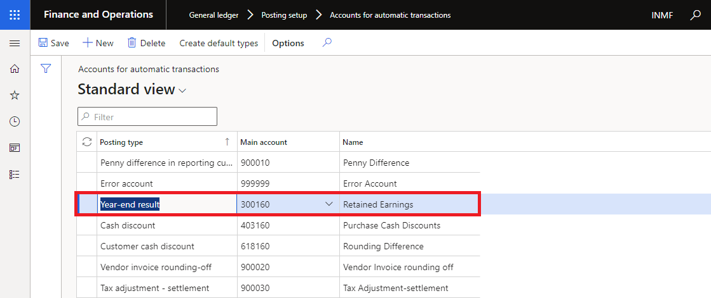
Accounts for automatic transactions — Year-end result
9.5 Validate main accounts
Path General ledger > Chart of accounts > Accounts > Main accounts
- Verify that the Main account type field is correctly set for each main account. The main account type determines whether a balance is brought forward as an opening balance or closed into retained earnings.
- The balance of a main account can be transferred to a different main account during the year-end close by entering the new account in the Opening account field. This is typically used for balance sheet accounts where an account is being deactivated and replaced for the new year.
9.6 Define the year-end close template
The template defines the group of legal entities the close will run for. It is reused each year and can be modified as the organisation changes.
Path General ledger > Ledger setup > Year-end close template setup (or from General ledger > Period close > Year-end close)
- Set the Group name and select the fiscal calendar. The group name should identify the group of legal entities included — many organisations set templates up by geography.
- Add legal entities, either by selecting them individually or by selecting an organisational hierarchy. Only legal entities that use the same fiscal calendar can be grouped together, because the year-end close runs by selecting a fiscal year rather than a date, and fiscal years vary between calendars. Where a hierarchy is chosen, only entities within it that use the selected calendar are added.
- Define the retained earnings main account for each legal entity.
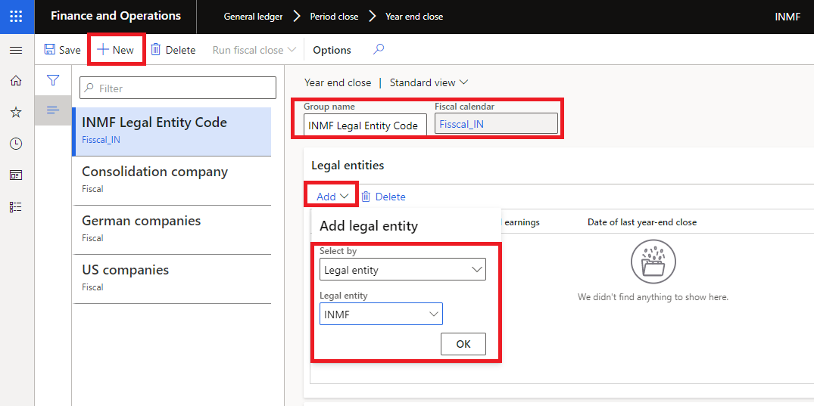
Year-end close template — group, fiscal calendar and legal entities
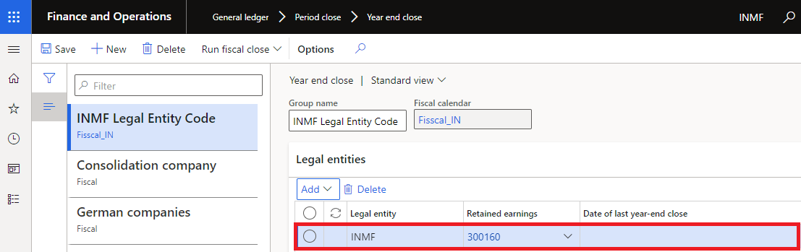
The retained earnings account populates per legal entity
9.7 Financial dimensions — the decision that drives performance
The Financial dimension tab defines which financial dimensions are used on the opening transaction. The setup applies only to the legal entity selected in the Legal entities grid, so it must be repeated for every entity.
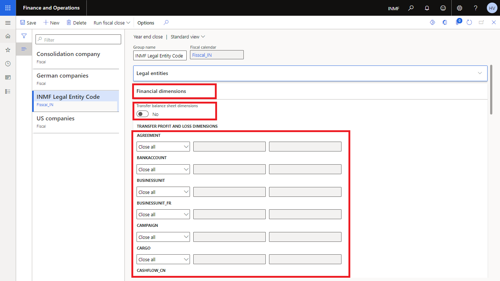
Financial dimension settings on the year-end close template
Transfer balance sheet dimensions
This specifies whether the financial dimensions on transactions posted to balance sheet accounts are maintained on the opening transaction. As a best practice this should be set to Yes.
The balance sheet setting does not affect existing balances in retained earnings — those are determined by the profit and loss dimensions. If fiscal year 2019 was the first year closed and Close all was used for Department and Cost center, a separate retained earnings account was created for each department-and-cost-centre combination. When 2020 is closed, the retained earnings from the previous year remain exactly as posted, even if Transfer balance sheet dimensions is set to No. Balances posted to retained earnings from previous year-end closes are never changed.
Transfer profit and loss dimensions — Close all versus Close single
This specifies which financial dimensions on transactions posted to profit and loss accounts are transferred to the retained earnings main account. First identify the dimensions relevant to the legal entity — which includes any dimension posted against during the year, even one that is no longer part of an active account structure. Then define each as Close all or Close single.
Option | Behaviour | Effect |
|---|---|---|
Close all (the default) | Maintains the original financial dimension values from posted transactions and uses them to create the opening balances for the retained earnings account. | Separate retained earnings beginning balances are created for every unique combination of dimension values. Maximum detail, maximum processing cost. |
Close single | All posted transactions carrying that dimension are summarised into a single retained earnings beginning balance for the dimension value you enter. Leave the value blank to post everything to retained earnings with a blank dimension. | One opening balance per dimension value. Far less detail to calculate, and materially faster. |
A worked example All transactions for the year were posted with the account structure Main account – Department. On the template, Department is set to Close single with a dimension value of 100. If total income posted to departments 200, 300 and 400 is 100,000, then one opening balance is created: Retained earnings – 100. |
Does Close single lose my detail? No. The historical, detailed postings to the profit and loss accounts are not affected and remain fully detailed. The option only affects the level of detail carried into the retained earnings opening balance in the new year. |
Account structures are not enforced by the year-end close Because account structures can change through a fiscal year, the relevant structure cannot always be identified, so the year-end close does not adhere to account structures. Opening balances are brought forward with the dimensions defined in the template — which means beginning balance entries can include dimensions no longer in the current account structure, and segment combinations that are no longer valid in it. To exclude a dimension from the retained earnings beginning balance entirely, define it as Close single and leave the value blank. |
9.8 Validate year-end close
From Dynamics 365 Finance version 10.0.41, the Validate year-end close feature runs checks before the close, detects issues and suggests a resolution. It helps ensure accurate ledger balances in both accounting and reporting currencies, and advises on best practice for managing large dimension sets. Select the target legal entity and the target year.
Path General ledger > Period close > Year end close > Validate year-end close
Issue detected | What it means | Resolution |
|---|---|---|
Highly variable dimensions | Over one million unique ledger dimension combinations have been identified, which can materially slow the close. | Avoid Close all for highly variable dimensions. Set them to Close single. |
Out-of-balance entries | Only settled ledger transactions from the year being closed are excluded from the opening balance, which can leave debits and credits out of balance. | Run a consistency check and use the Fix error option. |
Transaction overflow | Transactions carry amounts of 16 digits or more including decimals, which may cause an out-of-balance error during the close. | Enable Optimize year-end close and reverse the original documents causing the overflow, or adjust the balances manually. |
Partial ledger settlements | Additional checks added in version 10.0.45. | Follow the guidance returned by the validation. |
9.9 Run the year-end close
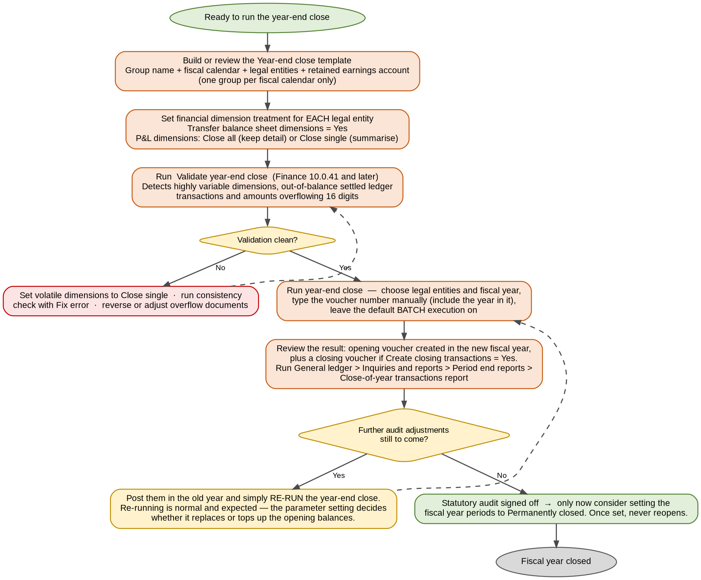
Figure 9 — Year-end close: execution
Path General ledger > Period close > Year-end close
- Select the year-end close template. New templates can be added or existing ones modified from here by selecting Year-end close template setup.
- On the Action Pane, select Run year-end close (shown as Run fiscal close in earlier versions).
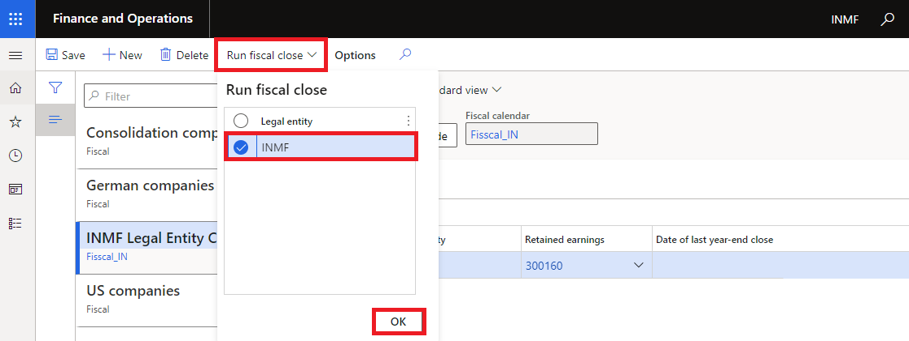
Selecting legal entities for the year-end close run
- Select all legal entities, or a subset. On the first run of a fiscal year you will usually select all of them to create beginning balances everywhere. On later runs, select only the entities that adjusting entries were posted for.
- Select the fiscal year to run against. Where more than one closing period exists for the last period of the year, the Period name field becomes available so you can choose which closing period the closing transaction posts to.
- Enter a voucher number. The same voucher number is used for every selected legal entity, and it is not generated from a number sequence. Include the fiscal year in the voucher number — it makes the year-end voucher trivial to find later.
- Leave the default batch execution on. The year-end close defaults to batch because it is a long-running process; once initiated you can return to other work.
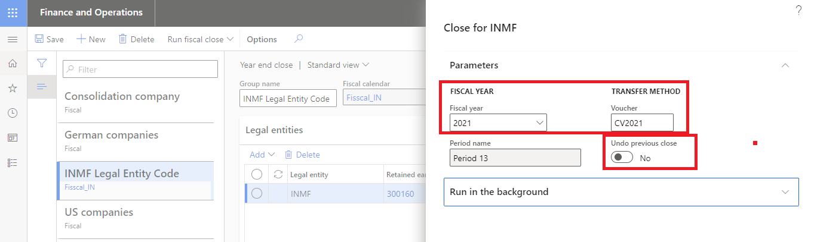
Year-end close run parameters
After completion, a record is created for each combination of legal entity and fiscal year. You see records only for legal entities you have access to. Each record carries the system date and time the process ran, and a direct link to the vouchers created.
9.10 Re-running versus reversing
These two are frequently confused, and the difference matters because one deletes your entries and the other does not.
Reverse year-end close | Delete existing year-end entries when re-closing | |
|---|---|---|
What it is | An action on the Year-end close page. | A parameter in General ledger parameters. |
When used | When you want to undo the close entirely, as if it never ran. | Only when running — not reversing — the year-end close. |
Effect | Deletes all opening and closing vouchers created for the fiscal year. The record is marked Reversed and stamped with the date and time, and the voucher link is removed. Runs in batch. | Yes: all closing and opening balance entries are deleted and the close runs again, producing a single accounting entry covering all transactions including adjustments. No: existing entries remain, and new entries are created only for the delta — transactions posted since the last close for that year. |
Does the close re-run automatically? | No. Select Run year-end close to run it again. | Yes — this parameter is applied during the run itself. |
Finding the reversed records A Show reversed check box above the grid hides or shows records for reversed year-end close processes. After running Reverse year-end close you may need to tick it to see the record. |
Two errors you may meet, and what they mean "The year-end close can’t be run because one or more ledger transactions posted into the fiscal year you’re closing were settled to a ledger transaction in a different fiscal year." Only settled ledger transactions from the year being closed are excluded from the opening balance, which throws debits and credits out of balance. This relates to the Awareness between ledger settlement and year-end close feature. "The year-end close for [date] can’t be reversed because beginning balance transactions are ledger settled in fiscal year [next year]." With that same feature enabled, reversals are not allowed if the opening transactions have been settled in the new year. Either reverse the ledger settlement in the new year first, or re-close the old year for adjustments only by setting Delete existing year-end entries to No. |
9.11 Close-of-year transactions report
Path General ledger > Inquiries and reports > Period end reports > Close-of-year transactions report
Select the year-end date for which to run the report.
Close-of-year transactions report parameters
Close-of-year transactions — report format
9.12 Making the year-end close faster
For organisations with large data volumes, the year-end close can become the longest single process in the finance calendar. Four levers are available.
Optimize year-end close
The Optimize year-end close service add-in moves the heavy year-end processing out of the Application Object Server and onto a microservice. The benefits are improved performance and a much reduced impact on the SQL database during the run, which frees resources that would otherwise affect other users’ daily operations. It is available from Dynamics 365 Finance version 10.0.31, and was backported to 10.0.30 and 10.0.29 with the latest quality update.
To use it, install the Optimize year-end close service add-in and enable the Optimize year-end close feature in Feature management. The close then checks whether both prerequisites are met and, if so, creates a year-end close service job per legal entity and runs the close on the microservice; Finance listens for completion and updates the results. Disabling the feature returns you to the standard closing logic.
With the feature enabled, two new columns — Results and Status — appear on the Year-end close page, in the Year-end close results dialog, and in the balance sheet financial dimension transfer options. A Balance sheet financial dimensions FastTab also becomes available on the template, letting you specify balance sheet dimensions in the same level of detail already possible for profit and loss accounts.
Lifecycle Services note From February 2026, new customers cannot create projects in Microsoft Dynamics Lifecycle Services for Finance, Human Resources, Supply Chain Management and Project Operations. New customers should use the Power Platform admin center instead. |
Clean up dimension sets
When the year-end close runs, each dimension set balance is rebuilt, which has a direct impact on performance. Many organisations accumulate dimension sets that were used once or created speculatively, and every one of them is rebuilt at year end. Evaluate them and delete what is unnecessary. Unnecessary sets also slow the BudgetDimensionFocusInitializeBalance batch job.
Path General ledger > Chart of accounts > Dimensions > Financial dimension sets
Close as many dimensions as possible using Close single
Closing to a single dimension value — which can be a blank value — means the system calculates far less detail when determining retained earnings balances. Evaluate the organisation’s genuine reporting requirement and use Close single wherever the detail is not actually needed in the opening balance.
Identify and constrain highly volatile dimensions
A highly volatile dimension provides little or no reuse, either by itself or in combination. There are two kinds: one that is individually volatile, typically appearing on only a single transaction or small sets of transactions; and one that becomes volatile in combination with other dimensions because of the permutations generated. Either can significantly affect year-end close performance. Define all of them as Close single.
The year-end close moves balances. It does not prepare the system to transact in the new year. That is a separate exercise, and one that can and should be done in advance — ideally before the year actually turns, because the alternative is a first working day on which nobody can raise a purchase order.
10.1 Identifying what needs to change
Three categories of number sequence need to be reviewed:
- Financial journal names where the number sequence runs by month or by period.
- Source documents, including the voucher number sequence for the source document on the number sequence template — for example purchase order and sales order numbers, which may be defined by site.
- Posting voucher number sequences for source documents on the number sequence template — internal invoice number, credit note voucher and similar, which affect the accounting entries.
Once identified, compile the sequences into Excel in the upload format so they can be loaded through data management rather than keyed.
10.2 The new-year checklist
# | Item | Notes |
|---|---|---|
1 | Create the new fiscal year in the fiscal calendar | For accounting transactions. Without it the year-end close has nowhere to post opening balances. |
2 | Add the new fiscal year to the fixed assets fiscal calendar | Only where a separate calendar is used for fixed assets. |
3 | Update the number sequence for Purchase order | May be defined by site. |
4 | Update the number sequence for Sales order | |
5 | Update the number sequence for Transfer order / stock transfer | |
6 | Update Free text invoice and voucher sequences | |
7 | Update Sales invoice and voucher sequences | |
8 | Update Sales credit note and voucher sequences | |
9 | Update Internal product receipt number | |
10 | Update Internal invoice number | |
11 | Update the GST reference number sequence group | See Section 10.3. |
12 | Update the calendar for withholding tax settlement | |
13 | Update the calendar for GST settlement | |
14 | Put the ledger calendar on hold for the closed year | On hold, not Closed. |
15 | Update the number sequence on the functionality profile | Retail industry only. |
16 | Confirm withholding tax thresholds are updated | Where the statutory thresholds have changed. |
17 | Confirm HSN / SAC GST rates are updated | Where rates have changed. |
10.3 GST reference number sequence group
GST transactions are differentiated by a unique number sequence. Where a different sequence is required for the address of each warehouse or legal entity, create a reference number sequence group and assign it to the addresses.
Path Tax > Setup > Sales tax > India > GST reference number sequence group
- Select New.
- Enter a name and a description.
Creating a GST reference number sequence group
- On the Details FastTab, define number sequences for each reference.
Source | Reference | Used when |
|---|---|---|
Accounts receivable | Bill of supply | Customer sales with non-GST transactions are posted. |
Accounts receivable | Debit/Credit note | Customer debit or credit sales with GST transactions are posted. |
Accounts receivable | Revised invoice | Customer revised sales invoices with GST transactions and a reference to the existing invoice are posted. |
Accounts receivable | Advance receipt voucher | Customer advance receipt transactions with GST transactions are posted. |
Accounts receivable | Advance refund voucher | Customer advance refund transactions with GST transactions are posted. |
Accounts receivable | GST invoice | Customer sales with GST transactions are posted. |
Accounts receivable | Export order | Customs export order transactions are posted. |
Accounts payable | Debit/Credit note | Vendor debit or credit purchases with GST transactions together with reverse charge transactions are posted. |
Accounts payable | Revised invoice | Vendor revised purchase invoices with GST and reverse charge transactions, referencing an existing invoice, are posted. |
Accounts payable | Advance payment voucher | Vendor advance payment transactions with GST transactions are posted. |
Accounts payable | GST invoice | Vendor purchases with GST transactions together with reverse charge transactions are posted. |
Assigning the group to the legal entity
Path Organization administration > Organizations > Legal entities
- On the Addresses FastTab, select More options > Advanced.
- On the Tax information FastTab, select Add.
- In the Name or description field, enter a value.
- On the GST FastTab, in the GSTIN/GDI/UID field, select a value.
- In the Reference number sequence group field, select a value.
- Set the Primary option to Yes, and select Yes to acknowledge the message.
GST FastTab with the reference number sequence group assigned
- Save the record and select Close. Repeat for all other required addresses for the legal entity.
Assigning the group to warehouses
Path Inventory management > Setup > Inventory breakdown > Warehouses
- On the Addresses FastTab, select Advanced.
- On the Tax information FastTab, select Add.
- Enter a name or description; on the GST FastTab select the GSTIN/GDI/UID value.
- Set Primary to Yes, and select Yes to acknowledge the message.
Warehouse tax information with GST details set as primary
- Save the record and select Close.
Everything in this section comes from differences that actually arose and had to be rectified. There is a common thread running through almost all of them: master data that is changed part-way through a financial year does not retrospectively change what has already been posted, so the sub-ledger and the ledger diverge and stay diverged until somebody passes a journal.
The single rule behind most of this section Changing a vendor group, a customer group, an item group, or a main account in a posting profile during a live financial year will create a reconciliation difference. If the change is unavoidable, work out the affected balance first and post the transfer journal at the same time — not at year end when nobody remembers why. |
11.1 Accounts payable
DO
| DON'T
|
If a change has already been made
- If a vendor group was changed mid-year, post a journal voucher crediting the balance of the original summary account to the new main account used.
- If an item group needs to be changed, post the corresponding journal voucher.
- Maintain a separate account for manual adjustment entries to vendor balances, used only for year-end adjustments.
- Where expenses are loaded onto inventory after the material is booked, a single ledger account is credited as expense with the offset being the inventory movement, per the item posting profile Profit/Loss posting types. If separate ledger accounts are needed, add a charge code on the purchase order for the service item being loaded and configure it — the item adjustment account posted through the posting profile is then nullified.
11.2 Accounts receivable
DO
| DON'T
|
If a change has already been made
- Where a customer group was changed, use a journal voucher to debit the existing balance of the original summary account to the new main account associated with the changed group.
- Where an item group was changed on an item, post a journal voucher to reconcile sales and the other ledger accounts associated with the original item group.
- Maintain a separate account for manual adjustments to customer balances, used only for year-end adjustments.
11.3 Stock transfer
DO
| DON'T
|
Known behaviours to plan around
Behaviour | Implication |
|---|---|
A posted stock transfer shipment cannot be reversed or cancelled in AX. It must be received at the destination and sent back through another transfer. In D365 cancellation is available where advanced WMS is not activated. | Where an e-way bill is generated on shipment and the shipment is cancelled, the e-way bill must also be cancelled — manually or as part of the e-way bill integration design. |
Where the assessable value on a transfer order line is zero for any reason, GST is not calculated even on inter-state transfers. | Validate assessable value before posting inter-state transfers. |
Business-unit-wise goods in transit and interim transit can mismatch because of system design. | A manual journal is needed to clear the balance by business unit. Total financial position and P&L are unaffected; the difference sits at ledger account level. |
Movement of goods within a site posts the financial entry at receipt, with no entry at shipment. | Only inter-site transfers create a shipment-side financial entry. |
Where the item model group has Stocked product unticked, the item cannot be transferred through the stock transfer module at all. | Check the item model group before designing a transfer process for an item. |
Where a transfer is made on transfer price, GST is calculated on the transfer price — cost price plus unrealised gain or loss. | Expect the GST base to differ from cost. |
Intra-state transfers between branches with different GSTINs should attract CGST and SGST, but AX does not calculate GST on intra-state stock transfers. | A workaround is to create a duplicate state code with a suffix, apply it to one branch to trigger IGST, then use Tax applicability in the tax document to tick SGST and CGST, untick IGST, and select Apply adjustment. |
Stock transfer to a job worker does not attract GST whether intra-state or inter-state, but the system calculates GST on inter-state transfers. | Use a Transfer order rather than creating a stock transfer for job-work movements. |
11.4 Production
DO
| DON'T
|
11.5 Inventory valuation
- Where the setup in the item model group is changed for some items, the stock sheet shows inventory valuation per the updated item model group, but inventory that has already flowed into the financial ledger does not change retrospectively — creating a mismatch to that extent.
- If Include physical value is unticked in the item model group, the value received on the GRN does not flow into the expected cost for valuation purposes, creating differences in inventory valuation.
- If Post financial entry is unticked, financial entries are not posted even though physical stock is negated, creating a difference between the physical stock sheet and the financial stock.
- Production orders for which a picking list or report as finished has been posted must be ended, and reviewed periodically at a frequency management decides. If they are not ended on time, the financial cost of inventory does not flow to the trial balance.
- Purchase orders for which a GRN has been posted must be invoiced, and reviewed periodically. If they are not invoiced, financial cost does not flow and inventory valuation is wrong.
- Inventory closing is to be processed monthly, with the closing date in the following month decided by management. After the inventory period is closed, no entry related to inventory can be posted in that period.
- Costing of positive inventory adjustments depends on the method: under FIFO or weighted average the user must define the unit price manually; under moving average the system picks the running average automatically; under standard cost the system picks the predefined standard cost.
Other item model group behaviours worth knowing If Accrue liability on product receipt is ticked, a financial voucher is posted at GRN and automatically reversed when the purchase invoice is posted. If unticked, no financial voucher is posted at GRN. Post product receipt in ledger in Accounts payable parameters (Update tab) must be ticked alongside Accrue liability on product receipt in the item model group to enable financial posting of the GRN. If Stocked product is unticked, inventory for that item is not maintained and all purchases are booked directly to profit and loss instead of inventory accounts. If Post to financial inventory is unticked, COGS is not posted to the trial balance. If the main account for posting type Discount is not linked and not tracked separately, discount is absorbed into the revenue account in the trial balance. Linking it means the unit price is the inventory cost and the discount is booked in P&L without affecting inventory cost. If Update vendor accounting using the invoice date is ticked in Accounts payable parameters (Invoice tab), the posting date for invoice booking becomes the vendor invoice date rather than the actual posting date. |
11.6 Retail
DO
| DON'T
|
Matching rules for retail reconciliation
- Sales as per store = Bill wise POS sale all report, where store data has moved to the D365 database.
- Net amount of Bill wise POS sale all = total amount of the sales register, where statement posting is complete for the period.
- Net sale of the sales register = revenue booked in the trial balance.
- Total of the sales register plus round-off booked in the trial balance (posting type Ledger journal, number series as defined for store collection) = total per the store-wise collection sales report.
- Total per the store-wise collection sales report = collection posted in the trial balance for all tender types, ledger account by ledger account, per the number sequence defined for store collection.
- All retail customer balances must be zero.
Where retail differences come from
Issue | Rectification |
|---|---|
Quantity difference between Bill wise POS sale all and the sales register | Use the combination of store, date, invoice number, customer number and item number to isolate the transactions. Post sales or return orders for every difference. |
Value difference between Bill wise POS sale all and the sales register | Use store, date, invoice number, customer number, item number and unit price to isolate. Journals are needed, and because journals do not flow from sales they will not appear in the sales register — adjust it manually. |
Collection double posted (statement header posted, lines not posted) | Reverse the collection through a journal. |
Transaction voided at store but posted in D365 | Sales was posted but collection was not, so reverse only the sales. Sales register updates automatically; update Bill wise POS sale all and the store-wise collection sales report manually. |
Transaction posted at store but voided in D365 | Both sales and collection need to be posted. |
Statement not posting at all | Check for inventory not available, period on hold, customer on hold, or financial dimensions not matching the configured account structure. |
Functionality not available in POS
- E-invoicing B2B is not available in AX/D365 POS. Post the invoice at POS, then the statement in D365, and generate the e-invoice from D365.
- TDS and TCS functionality is not available in POS.
- The system does not check inventory at POS invoice posting; it checks at statement posting in D365.
- Export to Excel is not available on POS — reports can be viewed on screen only.
- The receipt ID generated on POS does not flow to the invoice ID in D365; D365 generates its own invoice number and the receipt ID is not held on customer transactions. Custom reports can bridge this.
This is the control framework for the close. Each row states a difference that arises in practice, why it arises, the test that detects it, the report that evidences the test, and how it is put right. Run the tests every month rather than discovering the differences at year end, when the balances are twelve months old and nobody remembers the underlying transaction.
12.1 Sub-ledger to ledger differences
Difference | Why it happens | Audit test | Source | Rectification |
|---|---|---|---|---|
Vendor balance versus trial balance | The vendor balance always shows the current balance in the account, so a user matching it to the summary account of the vendor group will find a mismatch where the vendor group was changed mid-year. | Run the vendor reconciliation report periodically against the trial balance. | Trial balance; General ledger reconciliation report | Transfer the balance by journal from the old summary account to the new one, as at the date of change. |
Customer balance versus trial balance | Same mechanism — the customer group was changed during the year. | Run the customer reconciliation report periodically against the trial balance. | Trial balance; General ledger reconciliation report | Transfer the balance by journal from the old summary account to the new one, as at the date of change. |
12.2 Goods received but not invoiced
Scenario | Audit test | Source |
|---|---|---|
Post physical inventory is disabled | Process the GRN not invoiced report as at the period end date, listing every pending GRN not yet invoiced. The total of the report must agree to the balance in the accrual account. | GRN not invoiced report |
Post physical inventory is enabled | Same test — process the GRN not invoiced report as at period end and agree the total to the account balance. | GRN not invoiced report |
12.3 Inventory management differences
Scenario | Why it happens | Audit test | Rectification |
|---|---|---|---|
Change in item group | The item balance shows the current balance in the new account, while the user matches the inventory value report to the old account. | Check the summarised inventory value report — Level field set to Total — periodically against the trial balance, item group by item group. | Transfer the balance by journal from the old inventory account to the new one, as at the date of change. |
Change in posting profile | Same mechanism, driven by the posting profile rather than the item group. | As above. | Journal transfer between the affected inventory accounts. |
Pending stock transfer | Shipments dispatched but not received sit in transit accounts. | Process the Pending stock transfer report for transfer type Stock transfer. Match the total line amount to the Goods in transit account, and the GST amount to the Interim transit account. | Receive the transfers, or journal the residual by business unit. |
All stock transfers received | Nothing pending should mean nothing in transit. | If the Pending stock transfer report prints with no data, Goods in transit and Interim transit must both be zero in the trial balance. | Investigate any residual balance. |
Production control accounts | Control accounts used in the production process should always net out. | The sum of Consumption of raw material and Manufacturing of finished goods must be zero at any point in time in the trial balance. | Investigate un-ended orders and posting profile errors. |
12.4 Inventory valuation — the seven cases
These are the combinations that produce a wrong inventory valuation, distinguished by whether Include physical value is ticked in the item model group and what remains unposted.
Case | Condition | Why valuation is wrong | Audit source | Rectification |
|---|---|---|---|---|
1 | Include physical value unticked; purchase invoice not posted | For any transaction not financially closed, cost does not flow for that transaction or for subsequent transactions. | Trial balance; Inventory value report; GRN not invoiced | Post the purchase invoice. Process inventory closing every month end. |
2 | Include physical value ticked; purchase invoice not posted | Cost does not flow for that transaction. | Trial balance; Inventory value report; GRN not invoiced | Post the purchase invoice. Process inventory closing every month end. |
3 | Include physical value ticked; invoice posted; additional charges subsequently loaded onto inventory | Inventory close is mandatory every month to absorb the loaded charges. | Trial balance; Inventory value report | Process inventory closing every month end. |
4 | Include physical value unticked; invoice posted; production order not ended | The production order is not ended, so cost is not finalised. | Trial balance; Inventory value report; Pending production order | End the production order. Process inventory closing every month end. |
5 | Include physical value unticked; invoice not posted; production order ended | The purchase side is not closed, so the order is ended on incomplete cost. | Trial balance; Inventory value report; GRN not invoiced | Post the purchase invoice. Process inventory closing every month end. |
6 | Include physical value ticked; invoice posted; production order not ended | The production order is not ended. | Trial balance; Inventory value report; Pending production order | End the production order. Process inventory closing every month end. |
7 | Include physical value ticked; invoice not posted; production order ended | The purchase side is not closed. | Trial balance; Inventory value report; GRN not invoiced | Post the purchase invoice. Process inventory closing every month end. |
The short version of the whole table Two reports run every month — GRN not invoiced and Pending production order — catch six of these seven cases before they reach the balance sheet. Put both on the close task template with a due date before the inventory close runs. |
13.1 Opening balances and cut-over
Note – A detailed Cut over discussion will be scheduled with respective stakeholders before go-live.
We are going live mid-year. Inventory valuation is not finalised on the cut-off date. Can we upload quantities now and values later?
You can, but it costs you. If opening quantities are uploaded without value, or at a tentative value, all issues from those quantities flow into costing at that value. When the actual values are loaded later, every issue has to be corrected by manually selecting the price — a tedious exercise given the volumes, and one that continues until the opening stock is exhausted. If the issues are not corrected manually, inventory costing will differ from actual cost and the valuation will be wrong.
The better approach is to finalise the inventory valuation for the cut-off date as quickly as possible and upload quantity and value together. An organisation moving to D365 on 1 April can typically finalise closing inventory valuation within five days and then load both. Continuing to operate in the legacy software during those five days is not advisable; once error-free opening stock with value is loaded, the five days of transactions can be recorded in D365 as well.
The alternative is to pass a financial entry directly in the books, but such an entry will invite an audit observation and will need explaining.
The trade-off, stated plainly The longer it takes to finalise inventory valuation, the more certain it is that either inventory costing will differ from actual cost, or somebody will spend weeks feeding values manually. |
We need to change the inventory valuation method — say FIFO to weighted average. What happens?
There are mismatches in inventory costing when the method changes. The remedy is the same as at cut-over: close the inventories with value on the cut-off date so that costing is error-free from the date of change onwards. Use Inventory management > Periodic > Closing and adjustment > Close procedure > Close, fill in the closing date, set the specification to Total or Item number, and select OK.
In practice these changes are rare in running operations, and are generally neither recommended nor accepted by auditors unless there is a valid reason for the change.
13.2 Costing and returns
Physical inventory was issued at expected cost and billed, and now a sales return has arrived. Why is the cost wrong?
Where physical inventory is issued at expected cost — which happens when the actual invoice has not been booked by then — and the finished inventory is invoiced before the purchase invoice and the loading of other expenses, the costing mismatches actual cost. It is further misstated when a sales return makes the physical quantity positive again without picking up a value. The same problem occurs when production orders are closed but the physical finished goods were invoiced at expected cost, and it intensifies when a sales return then lands on those invoices.
Book all purchase invoices and all expense loading onto inventory so that costing is accurate. When physical quantity is received back through a sales return, pick the right COGS by selecting the batch, or by entering the value manually. Where the sales invoice with the particular batch is not selected on the return, fill in the return cost price manually at Sales order > Line details > Setup tab > Return cost price.
What happens when sales and purchase returns are not mapped to the original invoice?
In D365, receipt values are set by the user while issue costs are calculated by the system. A sales return is a receipt of goods, so the right cost has to be picked for correct valuation. On a purchase return, if the original purchase invoice is not mapped, the system derives a value from LIFO, FIFO or whatever valuation method applies. Both sales returns and purchase returns should be mapped to the original invoices against which the return takes place.
Why does inventory in transit come back at a different cost?
When material is in transit between branches, the receiving branch books the goods at an average price of all the in-transit batches. If location A sends batch 1 at 10 and batch 2 at 11, location B receives both at 10.50. That creates a mismatch between the actual in-transit inventory value and the received value at B. This is the base product behaviour; a customisation exists that books inventory at the receiving location based on the order of the in-transit order from the originating location.
COGS is booked in the trial balance. How do we prepare a balance sheet from it?
Use the identity: COGS = consumption of RM/PM + purchases of finished and traded goods + opening of FG, WIP and traded − closing of FG, WIP and traded. The balance sheet can be prepared from that equation.
13.3 Year-end close
Why can I not see previous year closings in the History section of the Year-end close page?
The system maintains subsequent year-end close process information. Vouchers from all year-end close processes can be viewed on the Voucher transactions page.
The year-end close fails because the reporting currency does not balance. What does that mean?
This can occur after enabling the Awareness between ledger settlement and year-end close feature. With it enabled, settled ledger transactions are excluded from the opening balance of the next year. Ledger settlement is performed only for the accounting currency, and validation only ensures that accounting-currency debits equal credits — the reporting currency amounts for those transactions are not validated and may not balance. Ledger settlement also does not automatically calculate and post a gain or loss in the reporting currency. A gain or loss transaction must therefore exist in the reporting currency when performing ledger settlement; if it is not included, the year-end close reports an out-of-balance.
Why is ledger settlement automation not processing December’s transactions?
The Automate ledger settlements feature runs for transactions dated from the first day of the fiscal year to the current date when the occurrence runs. For fiscal years ending 31 December, an automation scheduled for the first of every month runs on 1 December and next on 1 January — so transactions dated 2 to 31 December are never considered. Change the January occurrence to run on 31 December instead.
Where do the year-end close templates live now?
With the General ledger year-end enhancements feature enabled, template setup moved to its own page, Year-end close template setup, and is separated from running the close. The Year-end close page then behaves like the General ledger foreign currency revaluation page, listing each time the close was run or reversed, with an accounting manager initiating the run from there.
Print this, or rebuild it as a template in the Financial period close workspace. Sign-off columns are deliberately left blank.
Accounts payable
☐ | Activity | Path / report | Done by | Date |
|---|---|---|---|---|
Post invoices for all posted product receipts | AP > Invoices > Pending vendor invoices | |||
Post pending vendor invoice journals | AP > Invoices > Vendor invoice journal | |||
Post and settle vendor payments | AP > Payments > Vendor payment journal | |||
Run foreign currency revaluation | AP > Periodic tasks > Foreign currency revaluation | |||
Vendor to ledger reconciliation — no differences | AP > Periodic tasks > Vendor to ledger reconciliation | |||
GRN not invoiced agreed to purchase accrual | GRN not invoiced report | |||
Debit notes for short quantity booked | — | |||
Set period On hold for Vendor | GL > Calendars > Ledger calendars |
Accounts receivable
☐ | Activity | Path / report | Done by | Date |
|---|---|---|---|---|
Invoice all delivered sales orders | AR > Customer invoice workspace | |||
Post pending free text invoices | AR > Invoices > Free text invoices | |||
Post and settle customer receipts | AR > Payments > Customer payment journal | |||
Run foreign currency revaluation | AR > Periodic tasks > Foreign currency revaluation | |||
Customer to ledger reconciliation — no differences | AR > Periodic tasks > Customer to ledger reconciliation | |||
Customer ageing produced after settlement | Credit and collections > Inquiries and reports | |||
Set period On hold for Customer | GL > Calendars > Ledger calendars |
Cash, bank and fixed assets
☐ | Activity | Path / report | Done by | Date |
|---|---|---|---|---|
Bank statements imported, all accounts reconciled | Cash and bank management > Bank accounts > Reconcile | |||
Bank charges, interest and bank GST booked | — | |||
FA acquisitions, disposals and adjustments posted | Fixed assets > Journal entries | |||
Depreciation run for all depreciable assets | Fixed assets > Journal entries > Depreciation proposal | |||
FA balances reconciled to control accounts | Fixed assets > Inquiries and reports | |||
Set period On hold for Fixed assets and Bank | GL > Calendars > Ledger calendars |
Production and inventory
☐ | Activity | Path / report | Done by | Date |
|---|---|---|---|---|
Picking lists and routes posted | Production control > All production orders | |||
All completed production orders ENDED, in sequence | Production control > All production orders | |||
Pending production order report clear | Pending production order report | |||
Inventory adjustment, movement, counting journals posted | Inventory management > Journal entries | |||
In-transit transfer orders received where possible | Stock transfer shipped but not received report | |||
Pre-closing run | Inventory management > Periodic > Closing and adjustment | |||
Check open quantities — worked and cleared | Close procedure > Check open quantities | |||
Check cost prices — deviations investigated | Close procedure > Check cost prices | |||
Inventory close run for THIS month only, in batch | Close procedure > Close | |||
Inventory value report agreed to inventory GLs | Cost management > Inventory value reports | |||
Accrued purchases excluding sales tax agreed | AP > Inquiries and reports > Purchase | |||
Set period On hold for Inventory and Production | GL > Calendars > Ledger calendars |
General ledger and tax
☐ | Activity | Path / report | Done by | Date |
|---|---|---|---|---|
Accruals and provisions posted | GL > Journal entries > General journals | |||
Allocations processed | GL > Allocations > Process allocation request | |||
GST settlement run; GSTR-1 / 2B / 3B agreed to TB | Tax > Declarations | |||
TDS and TCS agreed to ledger; TDS posted by the 7th | TDS / TCS reports vs Trial balance | |||
PF and ESI challans agreed to the trial balance | Trial balance | |||
Inter-company and consolidation complete | GL > Consolidations | |||
Trial balance, P&L and Balance sheet produced | GL > Inquiries and reports > Financial reports | |||
Management sign-off obtained | — | |||
All ledger periods set to On hold, module access set | GL > Period close > Ledger calendars |
Report | What it proves | Run at |
|---|---|---|
Vendor to ledger reconciliation | The AP sub-ledger agrees with its control accounts. Use Include details and Differences only. | Day +3 |
Customer to ledger reconciliation | The AR sub-ledger agrees with its control accounts. | Day +3 |
Vendor balance list / Customer balance list | Supporting detail behind the control account balance. | Day +3 |
GRN not invoiced | Receipts taken into stock with no vendor invoice — agree to the purchase accrual account. | Day +1 and again before inventory close |
Accrued purchases excluding sales tax | The purchase accrual account balance. | Day +5 |
Pending production order | Orders carrying cost that has not reached the trial balance. | Before inventory close |
Balance production order | Production orders still open for review. | Day +2 |
Stock transfer shipped but not received | Goods in transit and interim transit balances by branch. | Day +2 |
Pending stock transfer | Line amount agrees to Goods in transit; GST amount agrees to Interim transit. | Day +2 |
Check open quantities | Transactions that will remain open after the inventory close. | Before inventory close |
Check cost prices | Cost prices deviating beyond the set tolerance. | Before inventory close |
Inventory value report | Inventory on the balance sheet agrees to the inventory sub-ledger. Set Level to Total for the summarised view. | After inventory close |
Inventory ageing report | Ageing profile of stock against the inventory GLs. | After inventory close |
Trial balance | The base for every reconciliation in this handbook. | Throughout |
Financial reports (P&L, Balance sheet) | The reporting pack. | Day +6 |
Close-of-year transactions report | The opening and closing entries created by the year-end close. | After year-end close |
All financial period close tasks | Evidence that the close followed a controlled process, and the data for days-to-close. | After sign-off |
Article | Link |
|---|---|
Financial period close workspace | learn.microsoft.com/en-us/dynamics365/finance/general-ledger/financial-period-close-workspace |
Close the general ledger at period end | learn.microsoft.com/en-us/dynamics365/finance/general-ledger/close-general-ledger-at-period-end |
Mass financial period close | learn.microsoft.com/en-us/dynamics365/finance/general-ledger/tasks/mass-financial-period-close |
Year-end close | learn.microsoft.com/en-us/dynamics365/finance/general-ledger/year-end-close |
Close the fiscal year | learn.microsoft.com/en-us/dynamics365/finance/general-ledger/tasks/close-fiscal-year |
Year-end close validation | learn.microsoft.com/en-us/dynamics365/finance/general-ledger/yec-valid |
Optimize year-end close | learn.microsoft.com/en-us/dynamics365/finance/general-ledger/optimize-year-end-close |
Year-end activities FAQ | learn.microsoft.com/en-us/dynamics365/finance/general-ledger/faq-year-end-activities |
Close financial periods (Record to report guidance) | learn.microsoft.com/en-us/dynamics365/guidance/business-processes/record-to-report-close-financial-periods |
Inventory close (Supply chain — cost management) | learn.microsoft.com/en-us/dynamics365/supply-chain/cost-management/inventory-close |
Keeping this document current Microsoft ships changes to the year-end close roughly every release. Two areas in particular have moved recently and are worth re-checking before each year end: the separation of the Year-end close template setup page from the close itself, and the Validate year-end close checks, which gained additional partial-settlement tests in version 10.0.45. Confirm against your current environment version before a year end rather than after it. |